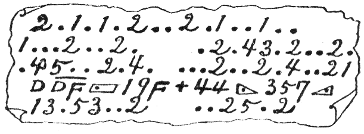

| 奇巌城 アルセーヌ・ルパン | |
| モーリス ルブラン | |
| (2012) | |
奇巌城
アルセーヌ・ルパン
モーリス・ルプラン
菊池寛訳
一 夜半の銃声
懐中電灯の曲物
レイモンドはふと聞き耳をたてた。再び聞
ゆる怪しい物音は、寝静
った真夜中の深い闇の静けさを破ってどこからともなく聞えてきた。しかしその物音は近いのか遠いのか分
らないほどかすかであって、この広い屋敷の壁の中から響くのか、または真暗
な庭の木立の奥から聞えてくるのか、それさえも分らない。
彼女はそっと寝床から起き上
って、半分開いてあった窓の戸を押し開いた。蒼白い月の光は、静かな芝草の上や叢
の上に流れていた。その叢の蔭の方には、古い僧院の崩れた跡があって、浮彫の円柱や、壊れた門や、壊れた廻り廊下や、破れた窓などが悲惨な姿をまざまざと露
わしていた。夜のかすかな風が向うの森の方から静かに吹いてきた。
と、またも怪しい物音......それは下の二階の左手にある客間から響くらしい。
レイモンドは勇気のある少女であったが、何となく恐ろしくなってきた。彼女は寝衣
の上に上着をまとった。
「レイモンドさん！レイモンドさん！」
境の戸の閉めてない隣りの室から、細くかすかな声が聞えたので、レイモンドはその方へ探り探り行こうとすると、従妹のシュザンヌが室から出てきて腕に取り縋
った。
「レイモンドさん......あなたなの？あなたも聞いて！」
「ええ......あなたも目を覚ましたのね！」
「私、きっと犬の声で起きたのよ......もうしばらくしてよ。けれどももう犬は鳴かないわね......今何時でしょう？」
「四時頃だわ。」
「あら！ お聞きなさい。誰か客間を歩いているようよ。」
「でも大丈夫よ、お父様が階下
にいるんですもの、シュザンヌさん。」
「でもかえってお父様が心配だわ。」
「ドバルさんが一緒にいらしってよ。」
「でもドバルさんはあっちの端
よ、どうして聞えるものですか。」
二人の少女はどうすればいいのか迷ってしまった。声を上げて救いを呼ぼうかと思ったが、自分らの声を立てるのさえ恐ろしくて出来なかった。窓の方へ近づいたシュザンヌは喉まで出た声をかみしめて、
「ごらんなさい...... 噴水の脇の男を！」
なるほど、一人の男が何やら大きな包を小脇に抱えて、それが足の邪魔になるのを払い払い、足早に走っていく。曲者は古い礼拝堂の方へ走って土塀の間にある小門
の蔭に消えてしまった。その戸は開けてあったと見えて、いつものように戸の開く音がしなかった。
「きっと客間から出てきたのよ。」とシュザンヌが囁いた。
「いいえ、違うわ。客間の方からならもっと左の方に現
われなければならないはずよ、でなければ......」
と、いいながら二人はふと気づいて窓から見下
すと、一挺の梯子
が階下の二階に立て掛けてあった。そしてまた一人やはり何か抱えた男が梯子を伝い降り、前と同じ道を逃げていくのだった。シュザンヌは驚いてよろよろと膝をつきながら、
「呼びましょう......救
けを呼びましょう。」
「誰が来てくれるかしら、お父様には聞えるわね......だけどもしまだ他の泥棒でもいて、......お父様に飛びついたら......」
「でも......下男を呼びましょう......呼鈴
が下男部屋に通じているわよ。」
「そうよ......それはいい考
だわ......でもいい工合
に来てくれればいいわね。」
レイモンドは寝床の側
の呼鈴を強く押した。......りりっりんりりっりん......と下男部屋の方に鳴った鈴
の音が、しーんとした家の中に響き渡った。二人の少女は抱き合って息をひそめた。あとはまた元の静けさに返って、その静けさは実に恐ろしい。
「私恐いわ......恐いわ。」とシュザンヌは繰り返した。
その時突然階下の暗闇の中から、にわかに人の格闘する物音が聞えてきた。つづいて物の倒れる音、罵る音、叫ぶ声、最後に喉でも突き刺されたような恐ろしい、物凄い、荒々しい悲鳴、唸声
がする。
レイモンドは戸の方に飛んだ。シュザンヌは泣き叫んでその腕に取り縋った。
「いやよ......いやよ......残していってはいやよ。」
レイモンドは彼女を押し退けて廊下へ飛び出した。シュザンヌもそのあとから泣き声を上げつつよろよろと転ぶように走った。レイモンドは梯子を駆け降りて、大きな客間へ駆け込むと同時に、敷居際に釘づけにされたようにぴたりと立ち止
った。シュザンヌもやっと駆けつけてきた。すぐ目の前に、懐中電灯を持った一人の男が突立
っていた。その男はさっと眼のくらむような強い電灯の光を二人の少女に浴
せかけて、長い間彼女たちの蒼白い顔を眺めていたが、実に悠々と落
つき払って、帽子をかぶり、紙切
と二本の藁くずとを拾い、絨緞
の上についた足跡を消して露台に近づき、再び少女たちの方を振り向いて丁寧に頭を下げ、つとそのまま姿を消した。
真先
にシュザンヌは父の寝ている客間につづいた小さな書斎へ走った。しかしそこへ入るか入らないうちに恐ろしい光景が、眼の前に現われた。斜めに差している月の光に照らされて、二人の男が並んで倒れている。彼女は一方の死骸に取り縋って、
「お父様！......お父様......、どうなすったのお父様！......」と声を限りに叫んだ。
ようやくするとジェーブル伯爵は少し身体
を動かした。そして途切れ途切れの声で、
「心配するな......俺は怪我はせぬ......だがドバルは？ドバルは生きているか？ 短剣は？......短剣は？......」
遺留品は皮帽子一個
この時二人の下男が手燭
を持って駆けつけた。レイモンドがも一人の倒れている男を見ると、それは伯爵の信用していた家令
のジャン・ドバルであった。顔は蒼ざめてもう息が絶えているようであった。レイモンドはつと立ち上って客間へ戻り、壁に掛けてあった一挺の小銃を取るより早く露台へ走った。曲者が梯子に片足を掛けてから、まだたしかに五六十秒しか経っていない、曲者はまだ遠くへ行かないはずである。果
して彼女は古い僧院の裾を廻って逃げる曲者の影を認めた。レイモンドは小銃を肩に当て、静かに的を定めてどんと一発放った。曲者は倒れた。
「占めた！もうあいつは捕まえたぞ、私が降りてまいりましょう。」と下男の一人が勇み立った。
「あれ、ビクトール、また起き上ったよ。......お前はすぐ壁の小門へ駆けておいで、あの小門より他に逃げ道はないんだから。」
ビクトールは急いで駆けていったが、彼がまだ庭へ出ないうちに曲者は再び倒れた。レイモンドはも一人の下男に見張りをしているようにいいつけて、自分は再び銃を取り上げて、下男の留めるのも構わずそのまま出ていった。アルベールという見張りをしていた下男は、レイモンドが僧院の本院について曲がるのを見た。そしてまもなくその姿が見えなくなった。五六分経っても彼女の姿が見えないのでアルベールは心配し出した。彼は曲者が倒れたところから目を放たぬようにしながら、梯子を伝って降りていった。そして大急ぎで曲者が最後に姿を見せた場所へ走った。彼はそこでちょうどビクトールを連れて曲者を探しているレイモンドと行き逢った。
「どうしました？」
「とても泥棒を捕まえることが出来ない。」とビクトールが答えた。「俺はちゃんと小門を閉めて鍵を掛けてしまったんだがなあ。」
「他に逃げ道はないのにおかしいなあ。」
「ええ、本当にそうよ。十分も経てばきっと泥棒を捕まえてよ。」とレイモンドもいった。
「この僧院から逃げ出せるはずはないんだから、きっとどこかの穴の隅っこに隠れているに相違ない。」とアルベールがいった。
小銃の声を聞いて農夫の親子が駆けつけた。その農夫たちの家もやはり土塀の中にあったが、彼らも何人
の姿も見なかった。それからみんなは叢という叢を搔き したり、円柱にからみついている蔓草を引き挘
った。礼拝堂
の扉も調べたがみんな錠が掛
っており、一枚の窓硝子も壊れていなかった。僧院の隅から隅までとり調べたが、猫の子一疋
も出なかった。けれどもただ一つ見つけたものがあった、レイモンドに撃たれて曲者が倒れた場所で、自動車の運転手がかぶるたいへん柔
かな皮帽子を拾った。その他には何一つ無かった。
したり、円柱にからみついている蔓草を引き挘
った。礼拝堂
の扉も調べたがみんな錠が掛
っており、一枚の窓硝子も壊れていなかった。僧院の隅から隅までとり調べたが、猫の子一疋
も出なかった。けれどもただ一つ見つけたものがあった、レイモンドに撃たれて曲者が倒れた場所で、自動車の運転手がかぶるたいへん柔
かな皮帽子を拾った。その他には何一つ無かった。
翌朝
六時に近所の警察署の警部が駆けつけてきてとり調べた。警部は早速本署へ宛て、犯人の皮帽子と短劒
一振
を発見したから、至急強盗［＃「強盗」は底本では「盗強」］
首領は捕まえる必要があると報告した。
十時には検事と、判事と判事の書記と三人を乗せた馬車と、ルーアン新聞の若い記者とある新聞の青年記者を乗せた馬車と、都合二台の馬車がこの邸
へ着いた。
この邸は昔アンブルメディの僧侶が住んでいた所であって、仏蘭西
大革命の戦争の時ひどく破壊されたのを、ジェーブル伯爵が買って手入
をしてから二十年も経っている。建物は時計塔の立っている本院一棟とその左右に出張っている二つの建物二棟からから成り立っていて、その周囲には石の欄干が取りつけてある立派なものであった。庭の土塀を越して遥か彼方に、サントマルグリット村とヴァランジュヴィル村との間から、美しい蒼い海が遠く水平線まで見えている。ここにジェーブル伯爵は優しい令嬢シュザンヌと、二年前に両親に死に別れた姪のレイモンドを連れて楽しく平和な生活をつづけていた。伯爵は書記のドバルと二人で、たくさんの財産や地面を監督していたのであった。
判事は邸へ着くとすぐ種々
調べて廻った。二階の客間へ行くと皆はすぐに、客間は少しも乱れていないことに気がついた。そこは何一つ手を触れたらしい跡もなかった。左右の壁には立派な美しい絨氈
が掛っており、奥の方には枠入
の見事な絵が四個掛っていた。これは有名なある画家の画
いた名高い絵であって、伯爵が叔父にあたる西班牙
の貴族ボバドイラ侯爵から伝えられたものである。判事がまず口を開いて、
「犯人は強盗が目的であったとしても、この客間を狙ったのではないらしいですね。」
「いや、そうはいわれません。」と検事がいった。「強盗の第一の目的はこの有名な絵を盗み出すことにあったと思います。」
「それではその時間がなかったのですな。」
「この点を我々は十分調べてみようとしているのです。」
負傷犯人の行方は？
この時ジェーブル伯爵が出てきて機嫌よく二人の裁判官を迎え客間の次の扉を開けた。この書斎はドバルが殺されてからまだ医者の他何人も入らなかった場所である。室内は大混雑をしていた。二脚の椅子は引
くり返り、卓子
は壊れ、その他置時計や文具箱などはみんな床
の上に散らばり、あたりに飛び散っている白紙にはそこここに血潮が垂れていた。医者は死体にかぶせてあった敷布をとり除けた。家令のドバルは平素
着ているビロードの服を着、長靴を履いたまま、片手を下にして上向
に倒れていた。カラーをとりシャツを開けば、胸部に物凄いほど大きな傷が鮮血に染
って現われた。
「短劒でぐさっと一突き、それで殺
られたのです。」
「ああ、客間のストーブの上に、皮帽子と並べておいてあった短劒ですね？」と判事が言った。
「そうです。この短劒はここで拾い上げたのです。」と伯爵はいった。
判事は室内をなお十分調べてから、伯爵に向
って伯爵が見たことや知っていることを尋ねた。
「私はドバルに起
されたのです。ドバルは手燭
を持って、ごらんのように昼間の仕度のままで私の寝台の傍
に立っていたんです。もっともドバルは時々夜更
しをする癖があったのですがね。ドバルはたいへん気が立っている様子で、小声で「客間に誰か来ている。」というじゃありませんか。なるほど私にも音が聞える。すぐ床から起きてそっとこの廊下
の［＃「廊下の」は底本では「廓下の」］
戸を開けると、その時あの大広間の境になっている戸がさっと開いて一人の男が現われ、そいつが私に飛びつくや否や、いきなり私の眉間を殴りつけたので私はそのまま気絶してしまったのです。それですから私はその他のことは何にも知らないのです。初めて気がついてみるとドバルがこの通り殺されて倒れていました。」
「あなたはその男を御存知ですか？」
「いいえ、少しも見覚えがありません。」
「ドバルは人に恨まれているようなことはありませんか。」
「ドバルですか、仇敵
ですか？ いやあれは実に立派な人間です。二十年この方私の宅にいて正直な男でした。」
「そうするとやはり盗むつもりで忍び込んだのですね。」
「そうです。泥棒です。」
「すると何か盗まれましたか。」
「いえ、何も。しかし私の娘と姪が、二人の曲者が邸園
を逃げる時、大きな包
を持っているのをたしかに見たのですから。」
「では二人のお嬢さんにお聞きしましょう。」
令嬢二人は客間に呼ばれた。シュザンヌはまだ顔色も蒼ざめていたが、レイモンドは元気であった。彼女は昨夜自分のしたことを種々
と話した。
「邸園を横切った二人の男は、たしかに大きな包を下げていました。」
「では三番目の男は？」
「何も持っていませんでした。」
「どんな男でしたか？」
「何しろ懐中電灯の光で眼がくらんでいてよく分りませんでしたが、肥って背
の高い男のようでした。」
「あなたにもそう見えましたか？お嬢さん。」と判事はシュザンヌに尋ねた。
「はい......いいえ、あの、」とシュザンヌは考えながら「私には中背で瘦せすぎであったように思います。」
判事はなおも犯人の逃げた道筋について、下男たちも呼んでくわしく調べた。調べる時二名の新聞記者も、農夫親子も、邸内
の［＃「邸内の」は底本では「庭内の」］
人々もその場にい合わせた。判事たちを乗せてきた馭者たちも来ていた。犯人はどうしても邸内から外へ逃げ出すわけはないということになった。その時判事はストーブの上にあった皮帽子をとり上げて、これを調べていたが、警部を呼んで小声で、
「おい、警部、君の部下をすぐバール町のメイグレ帽子店にやって調べさせてくれたまえ、この帽子を買った人間を覚えているだろうから。」
馭者の残した強迫状
踏みにじられた草の中に賊の通った跡が判然と分った。黒ずんだ血の塊が二個所ばかりで発見せられた。円柱の角を曲がるとそこは僧院の奥の方で、何事もないらしく、杉葉の散った土の上には身を引きずったような跡もなかった。そんなら傷ついた曲者はどうして令嬢やアルベールやヴィクトールの眼から逃れ去ったのだろうか？巡査や下男たちが藪
を分けて探したり、五つ六つある墓石の下を探ったりしたがやっぱり何事もなかった。
判事は鍵を預
っている庭番に命じて礼拝堂の扉を開けさせた。その礼拝堂というのは昔から崇められたものでそこにある立派な彫刻の人物などは宝物
であった。しかしその礼拝堂の中には別に隠れ家もなく、またここへ入るならばどんな方法で入るか？
それから例の小門を調べたが、判事はそこで自動車のタイヤの跡がまざまざと残っているのを見た。
「ははあ、負傷した曲者はここで仲間の者と一緒になって逃げたんだな。」
「それや出来ません。」とヴィクトールが叫んだ。
「私が見張りしているのに逃げられるはずはないのです。たしかに曲者はここにいます。」と下男は頑張っている。
判事は暗い顔をして邸へ引き返した。たしかに事件は面白くない、強盗が入って何も盗まれていない。犯人はたしかに内にいて、それが行方不明になっている。
そのうちに帽子屋へやられた巡査が帰ってきた。
「どうだい、帽子屋に逢ってきたかい？」と判事は待ちかねて叫んだ。
「はい、私は主人に逢いましたが、この帽子は馭者に売ったそうです。」
「馭者に？」
「はあ、何でも一人の馭者が店先に馬車を止めて、御客様が入用だから、自動車運転手用の黄色い皮帽子をくれといって、ちょうどこれが一個あったのでそれを差し出すと、馭者は大きさも調べずに、買いとって出ていったそうです。」
「それは何日だい？」
「何日？何日って今日です、今朝の八時です。」
「今朝？君は何をいっているのか？」
「この帽子は今朝売れたのです。」
「しかしこの帽子は今朝この邸園で発見されたんじゃないか。してみれば、それはとにかくその前に買われていなければならん。」
「しかし帽子屋ではたしかに今朝といっていました。」
判事は驚いて［＃「驚いて」は底本では「驚いた」］
しきりに考えていたがふと飛び上って叫んだ。
「馭者だ！今朝我々を乗せてきた馭者を押
えてこい。早くとり押えてこい！」
しかしその馭者はもういなかった。口実をつけて自転車を借りて逃げてしまったあとだった。警部はそのことを判事に報告してから、
「これがあいつの帽子と外套です。」
「帽子をかぶらずに出掛けたのか。」
「懐中
から黄色い皮の帽子を出して被っていったそうです。」
「黄色い皮の帽子？そんなことがあるもんか、それは現にここにあるじゃないか。」
検事が傍
から薄笑いをしながら、
「実に面白い、帽子が二個ある......一個は我々の唯一の証拠であった真物
で、馭者の頭に乗って飛んでいった他の一個は偽物で、それが君の手にある。やあ！こいつは一杯喰わされたね。」
「馭者を捕まえろ！」と判事は呶鳴
った。
「しかしその前に判事さん、もっと気をつけなければならないことがありますよ。まあこの紙切を読んで下さい。これは外套のポケットから出たものです。」
「外套というのは？」
「馭者の残していったものです。」
といいながら検事は四つ折にした紙を判事の前に出した。その紙切には鉛筆の走り書きがしてあった。
「もし首領
が死んだら、令嬢に仇
をするぞ。」
怪青年記者
この事件に一同は蒼くなった。
「伯爵」と判事は口を開いて「伯爵決して御心配なさらないで下さい。こんな脅迫
があったって我々警察の方で十分警戒しているのですから、令嬢方も決して御心配は入りません。大丈夫です。それから今度は諸君
のことですがね。」と判事は新聞記者に向って、「私は諸君
方を信用して、この場に諸君
たちがおられるのを黙っているのですが......」判事は何か思いついたらしくそのまま言葉を切ってしまって、二人の青年記者の顔を交
りばんこに見比べていたが、やがてその一人に近づいて、
「君は何という新聞社ですか、身分証明書を持っていますか。」
「ルーアン日報社です。」その記者は身分証明書を出して見せた。判事は次の記者に向って
「そして、君は？」
「僕ですか？」
「さよう、何という新聞社へ勤めているのですか？」
「そうですなあ、判事さん、僕は種々
な新聞に書いているんです......方々の新聞に......」
「身分証明書は？」
「持っていません。」
「すると君の姓名は、何か書類でもありますか？」
「書類なんて持っていません。」
「君は職業を証明すべき書類を持っていないのですね。」
「僕は職業ってありません。」
「すると、君は......」と判事は少し怒った声で叫んだ。「君は偽ってここへ入ってきて我々の調べることをすっかり聞いてしまって、その上姓名までいおうとしないんですね。」
「そうじゃないんです判事さん、だって僕が入ってきた時、あなたは何ともおっしゃらなかったでしょう。だから僕だって断らなかったのです。それにこの通り大勢来ているんですもの、犯人さえ来ているんですもの。」
彼れは物静かに悠々と話している。この記者はまだ若い青年で、その顔色は少女のように薔薇色で、鼻下
にはちび髯があった。しかしその眼は鋭利そうに光っていた。口元にはいつも微笑が浮かんでいた。
判事はなお疑い深い眼で彼を睨んでいた。二人の巡査が彼の前に進んだ。青年は愉快そうに、
「判事さん。あなたは僕を犯人の中の一人だとお思いになるんですね。しかしもし僕が本当に犯人の一人なら、さっきの馭者のように、とっくに逃げてしまったでしょう。考えてみても......」
「冗談もたいていにしたまえ！君の姓名は？」
「イジドール・ボートルレです。」
「職業は？」
「ジャンソン中学校の生徒です。」
判事は驚いたように眼を円くして、
「何、何だって？中学校の生徒......」
「ジャンソン中学です。ポンプ街の［＃「ポンプ街の」は底本では「ボンプ街の」］
......」
「おいこら、馬鹿なことをいうな！そんな戯
けたことをいってもしようがないじゃないか。」
「ですが判事さん、本当なのです。あ、この髯
ですね。御安心下さい、これはつけ髯なのです。」
と、いいながらボートルレは鼻下につけていた髯をとって捨てると、その顔はいっそう若くいっそう薔薇色をしていて紛れもなく中学生の顔になった。
「ねえ、これで分ったでしょう？まだ証明が入りますか、じゃ父から寄越したこの手紙を読んでごらんなさい、ほらね、住所に『ジャンソン中学校寄宿舎内イジドール・ボートルレ殿』とあるでしょう。」
判事はこれを信用したのかどうか分らないが、相変
らず難しい顔で、
「君は何しに来たのです。」
「僕はちょうど学校が休みなのです。僕はそれでこっちの方面を旅行しているのです。父が奨めてくれましたから。」
「つけ髯をなぜつけているのですか。」
「あ、僕たちは学校でよく探偵談をしたり、探偵小説を読んでいるもんですから、ただちょっとつけ髯をつけてみたんです。それで中学生じゃ人が信用してくれませんから新聞記者に化けたんです。一週間ばかり面白くない旅行をしていたところ、ちょうど昨晩ルーアンの友達に逢って、今朝この事件が起きたのを聞いたので、二人で馬車を雇ってきたんです。」
ボートルレはたいへん無邪気に話すので、聞いているうちに判事はいくらか興味を持ってその言葉を聞いた。そして前よりは少し穏
かな調子で、
「ところで君はここへ来て面白いと思いますか。」
「素的ですね、実に面白いです。ね、判事さん出来事を一つ一つ集めて、だんだん事件の真相らしいものが出来上っていくのを見ていると実に愉快です。」
「真相らしいというのは、こりゃ面白い、すると君は今度の事件の真相についていくらか分りそうですか。」
「いいえ。」とボートルレは笑いながら答えた。
「ただ一つ、僕には意見をつくることが出来そうです。またそれからその他にもたいへん大切な考が出来そうです。」
「へえ、君から何か教えてもらえるかもしれんねえ、はずかしいが私にはちっとも分らない。」
「それは判事さん、あなたがまだ十分考える時間がないからですよ。僕はこうしてあなたが種々
調べたことから真相らしいものを考え出すんです。」
「偉い！そうするとこの客間から何か盗まれたんですか。」
「僕はちゃんと知っています。」
「なお偉い！この家の主人よりよく知っている。では犯人の名前も知っているでしょう。」
「それも知っています。」
その場にい合わせた者は皆吃驚
した。検事と新聞記者は椅子を進ませ、伯爵と二人の令嬢は、ボートルレの落ちつき払っているのに感心してなおも耳を傾けた。
「すると犯人の名前を知っているのですね。」
「そうです。」
「また隠れている場所も知っているでしょうね？」
「そうです。」
判事は揉手
をしながら、
「それは幸
だ、で、君はその驚くべき考
を私に話してくれるでしょうね。」
「今からでも出来ます。」
この時、始めからボートルレの様子をじっと見詰めていたレイモンドがつと判事の前に進み出た。
「判事様......」
「何ですかお嬢さん。」
彼女はしばらく考えてなおボートルレの顔を見つめていたが判事に向って、
「あの判事様、私は昨日この方が小門の前の道をぶらぶら歩いていらっしたのを見掛けましたが、その理由を聞いて下さいませ。」
これは思い掛けない言葉であった。ボートルレはすっかり吃驚
してしまった。
「僕がですか、お嬢さん！僕がですか！あなたは昨日私をごらんになったのですか。」
レイモンドは考えながら、重々しげな調子で、
「私は昨日午後四時頃土塀の外の森を散歩していますと、ちょうどこの方くらいの背丈
で、同じ着物を着てお髯もやはり短く切っていた若い方を見掛けました。その人はたしかに人に見られないようにしていたようでした。」
「そしてそれが僕なのですか？」
「はっきりとは申し上げられませんけれど、本当によく似たお方でした。」
暗中の怪火
判事は迷ってしまった。さっき一人の仲間に一杯喰わされたばかりなのに、今またこの中学生という男に欺かれるのではあるまいか？
「君は令嬢の言葉にどう返事しますか？」
「もちろん令嬢が間違っています、僕は昨日その時分にはブュールにいました。」
「証明がなければ困る。とにかく調べる必要があるから、君、警部君、この青年を監視させてくれたまえ。」
ボートルレはたいへん困ったような顔をした。
「判事さん、お願いだからなるべく早く調べて下さい。このことが父に知れて、父が心配すると大変ですから、僕の父はもう老人なのです。」
「今夜か......明朝までに調べましょう。」と判事は約束した。
判事はそれから再び注意ぶかく自分で気長に取り調べた。しかし夕方になってもやはり何の変
ったことも見つけられなかった。この時もうこの邸へ集
ってきた多くの新聞記者に向って、
「犯人はもうこの邸内にはいないと思われる。我々が考えたところによれば犯人はもう逃走したに違いない。」と語った。
しかしなお念のために邸園の警戒を厳重にして、判事は検事と共にひとまず本署へ帰った。
夜になった。ボートルレは自分のためにつけられた巡査の眼の光る傍
で、椅子の上に眠った。外では巡査や百姓や村の人たちが建物の塀と僧院の間を絶え間なく見張っていた。十一時までは何事もなく静かにすぎたが、十一時を十分ばかりすると、一発の銃声が邸の方から響いた。
「用心しろ、二人だけここに残っていろ！他の者は銃声の方角に大急ぎで走れ。」と警部が叫んだ。
一同は邸の左手へどやどやと走った。この時、闇をついて何者か一人の男が消え去ったと思う間に、たちまち再び起る銃声にみんなはその銃声のした百姓家の方へと突進した。と、葡萄畠まで行きついた時、突然一筋の火の手が百姓家の右手にぱっと立ちのぼった。と同時にまた一箇所僧院の彼方に真赤
な火柱が立った。焼けているのは納屋らしい。
「畜生！ 火を点けやがった。それ追っかけろ。まだ遠くへは行かんぞ。」と警部は呶鳴り散らした。
しかし風向
で見ると火は本邸の方に向っている。何より先にこの危険を防がなければならない。伯爵も出てきてみんな一生懸命で火を消し止めたのは午前二時であった。もちろん犯人の影さえ見えない。
「どうして納屋などに火をつけるのか理由
が分らない。」と伯爵はいった。
「伯爵まあ私と一緒にいらっしゃい、その理由
を申し上げますから。」
警部と伯爵は連れ立って僧院の方に来た。警部は二人だけを残しておいた巡査の名を呼んだ。二人の巡査は出てこなかった。他の巡査たちが二人を探しに行った。と、小門の入口のところで二人の巡査が目隠しをされ、猿轡
を嵌められて、細縄で縛られているのを見つけた。
「残念ながら我々は誑
された。」と警部が呟いた。「あの銃声も火事もみんな我々の警戒を破るためだったのです。我々がその方に気をとられている間に、奴らは仕事をしていったのです。」
「仕事とは？」と伯爵が聞いた。
「傷ついた首領
を運び出すためです。」
警部はたいへん口惜しがった。そればかりではなかった。夜が明けてから、ボートルレ少年が見張りの巡査に眠り薬を飲ませて、窓から逃げ出したことが分った。
二 怪中学生
医学博士の誘拐
翌日の新聞に次のようなことが発表された。「昨夜、外科医として有名なドラトル博士は夫人や令嬢と一緒に芝居を見に行ったが、その終
り頃に二人の従者を連れた一人の紳士が来て博士にいった。
「私は警察から参りましたが、ぜひ私と一緒においでが願いとうございます。急に先生にお願いすることが出来ましたのでお迎えに参りました。芝居が終ります頃にはきっと御帰りになれますから。」
博士はその紳士を連れて劇場を出たが、芝居がお終いになっても帰ってこないので、夫人たちが心配して警察へ電話をかけると、それは全く誰か他の者のしたことで警察では知らないことだと分り、大騒ぎになった。」
このことは、次の新聞でいよいよ不思議な事実となって現われた。
朝九時になってドラトル博士は一台の自動車で帰ってきた。その自動車は全速力で行方を晦
ましてしまった。博士の語るところによると、ある手術をしなければならない病人を診察するために連れていかれたということである。それはある田舎の宿屋の一室で、病人はたいへん悪かったそうである。そして博士は一万円のお礼を貰ったそうである。しかしそれ以上はどうしても話さなかった。博士は堅く口止めをされているらしかった。
警察ではこの博士誘拐事件を、あのジェーブル伯爵邸の事件と何かの繫
りがあると目星をつけた。傷ついた賊のいなくなったこと、有名な外科医の誘拐、そこに何かあるだろうとは誰でも考えることである。
調べた結果、その考は間違いのないことになった。馭者に化けて入
り込み、皮帽子をとりかえて、自転車で逃げた犯人は、自転車をアルクの森の溝の中に捨てて、サン・ニコラ村へ行き、そこから左
のような電報をパリへ打った形跡がある。
Ａ
・Ｌ
・Ｎ
・身体悪し、手術を要す、名医送れ。
これでいよいよはっきりと分った。この電報を受けとった悪漢
の仲間は、博士を早速送ったのだ。こちらでは火事騒ぎを起させ、その間
に傷ついた首領
を救い出して、これを近所の宿屋へかつぎ込んで、手術を受けさせたに違いない。今はその宿屋をつきとめればいい。パリからは特別にガニマール探偵が入り込んできた。近所の宿屋という宿屋は一軒残らず家の中まで調べた。しかしどうしたのか、そんな怪我人を泊めた宿屋は一軒もなかった。
翌日曜の朝、一人の巡査が、その夜
塀の前の往来で一人の怪しい人影を見たといった。仲間の者が様子を見に来たのであろうか？あるいはまた彼らの首領
が僧院のどこかに隠れているのであろうか？
偽物は偽物です
その夜
ガニマール探偵は小門の外を警戒していた。
十二時すぎになって果して怪しい一人の男が森から現われて、ガニマールの前を通り、小門から庭へ忍び込んだ。三時間ばかりの間、その男は僧院の近所をあちこちと歩き廻り、あるいは地上に屈んでみたり、あるいは円柱にのぼってみたり、あるいは一つ所に立ち止まって長いこと考えていたりしたが、やがてまた元のようにガニマール探偵の前を通っていこうとした。待ち構えていた探偵たちは突如組みついて捕まえた。曲者は少しも手向いをしなかった。しかしいざ調べる時になると、何を聞かれても答えなかった。判事が来れば分ることだというだけであった。月曜日の朝判事は着いた。ガニマールは曲者を判事の前に引き立てた。曲者はボートルレであった。
判事はボートルレを見て、非常に喜ばしげに両手を差し出して叫んだ。
「やあ、ボートルレ君！君のことは十分分りました。君はもういないのかと思いましたよ。」
ガニマールは驚いてしまった。ボートルレは判事にいった。
「判事さん、じゃもうすっかり分りましたね。」
「十分［＃「「十分」は底本では「十分」］
分りました。第一レイモンド嬢が塀の外の小路で君を見たという時間に、君はたしかにブールレローズにおられた。君は間違いなくジャンソン中学の学生で、しかも優等生であることが分りました。」
「では放免して下さいますか。」
「もちろんします。しかし先日話し掛けて止めてしまった話のつづきをぜひしていただきたい。二日間も飛び廻ったことだから、だいぶ調べは進んだでしょう。」
これを聞いたガニマールはいかにも馬鹿々々しいというような顔をして、部屋を出ようとした。判事は手を挙げてそれを呼びとめた。
「ガニマールさん、いけないいけないここにいらっしゃい。ボートルレ君の話は十分聞くだけの値
があります。ボートルレ君の鋭い頭を持っていることはなかなかの評判で、英国の名探偵エルロック・ショルムス氏の好
い対手
とさえいわれているのですよ。」
ガニマールは苦笑いをしながらとどまった。ボートルレは話し出した。
「僕は調べたことをお話して、知ったか振りをしようとは思いませんが、まず盗まれたもののことからお話しましょう。僕にはこれは一番易しい問題でしたから。」
「易しいというのは？」
「順々に考えてみさえすればいいからです。それはこうです。二人の令嬢の言葉によれば、二人の男が何か持って逃げたということです。そうすると何か盗まれたに違いないのです。」
「なるほど、何か盗まれたのですね。」
「ところが伯爵は何も盗まれてはいないといっています。」
「なるほど。」
「この二つのことから考えてみると、何か盗まれたのに、何も失
くなっていないということは、何か盗んだ品物と少しも変らぬ物が本当の物とおき変えられてあるに違いありません。」
「なるほど、なるほど。」と判事は一生懸命になって聞き出した。
「この部屋で強盗の眼につくものは何でしょうか？二つの物があります。第一にあの立派な絨氈です。しかしこんな古い掛物
はとてもこれと同じようなものは出来ません。すぐに偽物ということが分ります。次にあるのは四枚のこの名画です。あの壁に掛けてある有名な絵は偽物です。」
「何ですって！そんなはずはない。」
「いや、たしかにそうです。」
「いや、それは間違いだ。」
「まあ、判事さんお聞きなさい。ちょうど一年前ある一人の男が、伯爵のところへ尋ねてきて、あの名画を写させて下さいと申し込みました。伯爵が許されたので、その男は早速それから五ヶ月も毎日この客間に来て写していったのです。ここに掛っているのは、その時写した方の偽物です。」
怪少年の明察
判事とガニマールとは驚いて眼を見合わせた。
「とにかく伯爵に聞いてみよう。」と判事はいった。伯爵は呼ばれた。そしてついにボートルレは勝った。伯爵はしばらく困ったような顔をしていたが、やがて口を開いた。
「実は判事さん、この名画は四枚とも偽物です。」
「では、なぜさようおっしゃらなかったのです。」
「私は穏
な方法でその絵をとり戻そうと思ったからです。」
「それはどんな方法ですか？」
伯爵は答えなかった。ボートルレは代
って答えた。
「この頃、大きい新聞に『名画買い戻す』という広告が出ています。あれがそうです。」
伯爵は首肯
いた。またしても少年は勝った。判事はますます感心してしまった。
「君は実に偉いですね。どうぞ先を話して下さい。君は犯人の名前も知っているといわれたはずですね。」
「そうです。」
「誰があのドバルを殺したのでしょう。その男はどこに隠れているのでしょう［＃「のでしょう」は底本では「でのしょう」］
。」
「実はそのことについては、一つの間違いがあります。ドバルを殺した男と、逃げた男とは別の人間です。」
「何ですって？」判事が叫んだ。「伯爵や二人の令嬢が客間で見た男、そしてレイモンド嬢が銃で撃って、邸園の中で倒れ、我々が今探している男、それと、ドバルを殺した男とは別の人間だというのですか。」
「そうです。」
「では別にまだ逃げた犯人がいるのですね。」
「いいえ。」
「ではどうもよく分らないですな。誰がドバルを殺したのです。」
「それを申し上げる前に、少しくわしくお話をしないと、私が余り変なことをいうようにお思いになるでしょう。まずドバルが殺されたのは夜中の四時であるのに、ドバルは昼間と同じような着物を着ていました。伯爵はドバルは夜更しをする癖があるといわれましたが、みんなのいうのを聞きますと、それとは反対に、ドバルはたいへん早く寝るそうです。そうしますと話が合わないで少しおかしくなります。それに僕の調べたところによると、あの名画を写させてくれといった画家は、ドバルの知り人
だったということです。それでいよいよ僕はドバルが怪しいと思いました。」
「するとどういうことになりますか？」
「つまり画家とドバルとは仲間でした。それにはたしかな証拠があります。ドバルが手紙を書いた吸取紙の端
に『Ａ
・Ｌ
・Ｎ
』［＃「Ｎ』」は底本では「Ｎ」］
という字があったのを見つけました。電報の名前と同じです。ドバルは名画を盗みとった強盗犯人と手紙のやり取りをしていたのです。」
「なるほど、そして......」判事はもう反対しなかった。
「ですから、逃げた犯人が、仲間であるドバルを殺すはずはありません。」
「そうかしら？」
「判事さん思い出して下さい。気を失っていた伯爵が一番初めに叫んだ言葉は『ドバルは生きているか？』ということでした。その後伯爵は『眉間を曲者に殴られて気を失ってしまった。』といわれました。どうして気を失った伯爵が、正気づくと同時にドバルが短剣で刺されたことを知っていたのでしょう。」
そしてすぐまたボートルレはつづけた［＃「つづけた」は底本では「けつづた」］
。
「強盗たちを客間へ引き入れたのはドバルです。そして伯爵が目を覚ましたので、ドバルは短剣を持って伯爵に飛びつきました。伯爵はついにその短剣を奪いとってドバルを刺したのです。それと同時に、も一人の曲者に眉間を殴られて気を失ったのです。」
ルパン？生？死？
判事とガニマールはまた顔を見合
せた。
「伯爵、この話は真実でございましょうか？......」
判事は尋ねた。伯爵は答えなかった。
「黙っていらしってはかえっていけません。どうぞお話し下さい。」
「今のお話しはみんな本当です。」伯爵ははっきりといった。判事は飛び上って驚いた。
伯爵は、二十年も自分の家に働いたドバルを賊の仲間だと知らせたくなかった。それにもうドバルは殺されているのでそれで十分だと思った。ドバルは二年前からある婦人と知り合いになり、その人にお金を送るために盗賊をするように［＃「するように」は底本では「すやるうに」］
なったということなどを伯爵は語った。
伯爵が室を出ていったあとで判事は今度は犯人の隠れている宿屋のことのついて尋ねた。ボートルレの答えはまた違っていた。ボートルレの答えによると、犯人は宿屋などにはいないというのである。宿屋へ運んだように見せかけたのは警察を誑
す［＃「誑す」は底本では「訛す」］
陥穽
であった。犯人はたしかにまだあの僧院の中に隠れている。死にそうになっている病人をそんなに運び出せるものではない。あの火事騒ぎをやっている間
に医学博士を僧院の中へ案内した。医学博士が宿屋だといったのは、犯人たちが博士を脅
して、あのようにいわせたのだとボートルレは語った。
「しかし僧院の中は円柱が五六本あるばかりで......」
判事は不思議がった。
「そこに潜り込んでいるのです。」とボートルレは力を込めて叫んだ。「判事さん、そこを探さなければ、アルセーヌ・ルパンを見つけ出すことは出来ません。」
「アルセーヌ・ルパン！」判事は飛び上って叫んだ。
有名なその一言に一座はしばらくしんとしてしまった。アルセーヌ・ルパン！大冒険家大盗賊王、眼に見えぬ彼ルパンは空しい大捜索の幾日間を、どこかの隅で傷に苦しんでいる。不敵の敵は本当にルパンであろうか？判事とガニマール探偵とはしばらくじっと動かなかった。
「ごらんなさい。」とボートルレはいった。「彼らが手紙をやった宛名の略字に何とありますか、Ａ
・Ｌ
・Ｎ
すなわちアルセーヌの一番初めの文字
と、ルパンの名の初めと終りの文字をとったのです。」
「ああ、君は実に偉い天才です。この老ガニマールも負けました。」とガニマールはいった。ボートルレは喜びに顔を赤くして老探偵の差し出した手を握った。三人は露台に出た。そしてルパンが隠れているという僧院を見下
した。判事は呟くように、
「してみるとあいつはあそこにいますね。」
「あそこにいます。」とボートルレは重々しげにいった。「銃で撃たれた時からルパンはあそこにいるのです。いかにルパンでもあの時逃げ出すことは出来ないことだったのです。」
「そうするとどうして生きているのだろう。食物
や飲物も入るだろうに。」
「それは僕にはいえません。しかし彼があそこにいることは決して間違いありません。僕はそれを断言します。」
探偵の手懸 り
僧院の方を指
したボートルレの指先は空中に一つの円を描いて、それをだんだんに小さくしてとうとうある一点に止
めた。判事と探偵はその一点を見つめつつ胸の慄
えるのを覚えた。アルセーヌ・ルパンはあそこにいる。有名な巨盗
ルパンが独り寂しく、かの暗い地下室の冷たい土の上に死に掛って横たわっていると思えば、一種悲愴な気持がわいてくるのであった。
「もし死ぬようなことがあったら。」と判事が声を潜めていった。
「もし死にでもしたら、その時こそ判事さんレイモンド嬢を警戒せねばなりません。なぜならば、手下の者はきっと復讐するでしょうから。」
ボートルレはしばらく経つと、学校の休暇が今日でお終いになるからといって、判事が相談相手に引き留めるのも断って、パリへ帰ってしまった。彼はまたジャンソン中学の学生になった。
ガニマールは僧院の中をすっかり調べたが何の手懸りもないので、彼もまた同じ日の夜行でひとまずパリへ引き上げた。
不可思議な暗号紙片
こうしてわずか二十四時間のうちに、たった十七歳の少年の言葉によって、少しも分らなかった事件の糸はほぐされた。首領
を救わんとする強盗団の計画はわずか二十四時間で見事に破られ、かの巨盗アルセーヌ・ルパンの逮捕は確実になった。新聞紙はボートルレの記事でいっぱいであった。人々はみんなボートルレに驚き、どこででもボートルレを褒める言葉が交
された。
しかもまた一方判事の方では、ボートルレが話したことより一歩も先へ進まなかった。レイモンド嬢がボートルレと見間違えた男のことも、四枚の名画のその後の行方も、同じく暗
に包まれたままであった。僧院の中の捜索も判事は自分自身から毎日出掛けて探したが、どうしても分らなかった。
ある新聞記者がジャンソン中学へ行ってボートルレに逢って、なぜ探偵をつづけないのかと尋ねた。ボートルレは今ちょうど試験なのであった。彼は試験に落第するのは厭だといった。
「しかし強盗を捕まえるのはたいへんいいではありませんか。」と新聞記者はいった。
「それでは僕は六月六日の土曜日に行きましょう。」とボートルレは答えた。
六月六日！この日は新聞に一斉に書き出された。「ボートルレは六月六日ドイエップ行の急行に乗る。そしてアルセーヌ・ルパンは捕縛されるであろう。」と。
その日ボートルレは一人で汽車に乗った。毎日毎夜の勉強にくたびれて彼は眠ってしまった。ルーアンの見える頃にようやく目が覚めたが汽車の中はやはり彼一人であった。ふと前の腰掛覆
の上に何やら書いた一枚の紙片がピンで留めてあるのに気がついた。その書いてある字を読んでみると、
「汝は汝の学業に勉めよ。然らずんば汝の上に災
あらん。」
「ははあなるほど」とボートルレは両手を擦りながら叫んだ。［＃「叫んだ。」は底本では「叫んだ」］
「敵の形勢は悪くなってきたなあ、こんな脅迫なんか馬鹿らしい。」
汽車はルーアンに着いた。ボートルレはその停車場で新聞を見て、驚きの余りさっと顔色を変えた。
「昨夜悪漢数名、ジェーブル伯邸にてシュザンヌ嬢を縛り猿轡を嵌めておいて、レイモンド嬢を誘拐したり。邸より五百米突
の間は血跟
が点々と落ち、なお附近に血染
の襟巻が捨ててあった。これより見て、不幸なレイモンド嬢は殺害せられたりと信ぜらる。」
ボートルレは身体を二つに折り、頭を両手で抱えて思いに沈んだ。
彼はドイエップから馬車を雇った。ジェーブル伯爵邸の前で判事に逢った。判事は何もくわしいことは知らないといった。ただ皺苦茶
になった破れた紙片
をボートルレに渡した。それは血染の襟巻が捨ててあったところに落ちていたものであった。
「どうもこの紙片
は何の手懸
にもなりそうにありません。」と判事はいった。
ボートルレはその紙片
を打ち返し打ち返し眺めた。それには次のような記号と点が紙一面に記してあった。

三 惨死体
令嬢は生死不明
判事は書記を連れて、ドイエップへ帰る馬車を待っていた。判事はその前にも一度ボートルレに逢いたいと思ったがその姿が見えなかった。書記も知らないといった。朝から見えないのであった。判事はふと思いついて僧院の方へ行ってみた。ボートルレは僧院の傍の松葉が一面散り敷いている地面に腹這いになって、腕を枕に眠っているような風をしていた。
「君、何をしているんです。眠っていたの？」
「いいえ、僕は考えていたんです。」
「今朝からずっと？」
「え、今朝からずっと。ね判事さん、犯人は初めからレイモンド嬢を殺すつもりだったのなら、なぜわざわざ外まで連れ出して殺したのでしょう？ そしてその死体はどうしたのでしょう。」
「さあ、それは私にも分らん。そして死体もまだ発見されてはいない。しかし調べてみると、海岸に望んだあの絶壁まで行った形跡がある。そこは恐ろしいほど切り立った崖で、下を見下
すと約百米突
ばかりの深い絶壁で、その下には大きな巌
に波が恐ろしい勢
で打ちつけている。たぶんそこへ投げ捨てたものと思われる。」
「そうでしょうか？」
「そうだ。ルパンが死んだので、この前に脅迫した通り令嬢を暗殺した。しかしよく考えてみると、どうもおかしい。まだルパンは生きているに違いない。ね、ボートルレ君、いよいよ事件は分らなくなってしまった。それに君、ジェーブル伯爵は、わざわざロンドンから、エルロック・ショルムスを呼んだ。ショルムスは来週の火曜日から来ることになった。ね、君、我々はどうしてもその前にこの謎を解かなければならない。」
「では判事さん、今日は土曜日です。月曜の朝十時にここでお逢いしましょう。それまでに考えておきます。」
判事はボートルレと別れた。ボートルレは伯爵から自転車を借りて出掛けた。
漆喰の傑作
少年ボートルレはまず四枚の名画が運ばれていった道を調べることにした。彼は自分の考と地図をたよって進んだ。そしてやっと四枚の名画は、約十八里ばかり先のある河のほとりで、自動車から舟に積み替えられたことが分った。そしてその舟の船頭に逢うことが出来た。船頭はなかなか初めはいわなかったが、やっと少しずつ話してくれた。それによると、その船頭は名画を運んだ時の一度だけではなく、六遍ばかりも雇われたということであった。
「六遍？......そしていつ頃から。」
「その前から毎日でさあ、しかしいつも品物は違っているようでしたよ。大きな石ころみたいな物や、時には新聞紙に包んだ小さなかなり長い物などがありました。とても大切がって私らには指もさわらせませんでしたよ。」
ボートルレは思いがけない発見に蹌踉
めきながら外へ出た。彼が伯爵邸へ帰ってくると、彼へ手紙が来ていた。見ると次のようなことが書いてあった。
「黙れ、然らずんば......」
「やあこりゃ、自分のことも少し気をつけないと危
いぞ。」とボートルレは呟いた。
月曜日の朝判事はやってきた。
「どうです、分りましたか。」
「分りました。とても素晴らしいことが。今はルパンの隠れ家どころではありません。我々が今まで気づかずにいたもっと他の物が失くなって［＃「失くなって」は底本では「失くなてつ」］
います。」
「名画の他にですか？」
「さよう、もっと大切な物が、しかも名画と同じように替
りの品物をおいていきました。」
二人は礼拝堂の前を通っていた。ボートルレは立ち止まって、
「判事さん、あなたはそれを知りたいんですか。」
「もちろん知りたいです。」
ボートルレは太い杖を持っていたが、突然その杖を振り上げて、礼拝堂の扉を飾っている数個の彫像の一つを発止
と打った。
「ど、どうした、君は気でも違ったか？」判事は思わず、飛び散った彫像のかけらの方に駆け寄りながら叫んだ。「これは実に立派な物......」
「立派な物！」ボートルレはまたつづいてその次のマリヤの彫像を打ち壊しながら叫んだ。判事はボートルレに組みついて、
「君、馬鹿なことをしてはいけない！」
その次の老王
の像も、基督
の像も飛び散る。
神秘の土窟
「その上動いたら撃つぞ。」ジェーブル伯もそこへ駆けてきてピストルを差し向けた。ボートルレは声高く笑った。
「伯爵、偽物です！」
「何だって？」二人は叫んだ。
「偽物です、つくり物です、中は空っぽです！」
伯爵は彫像のかけらを拾ってみた。するとどうだろう、立派な大理石はただの漆喰に変っているではないか。そこにある彫像はまたとない実に立派な彫像なのであった。それがただの石膏細工
に［＃「石膏細工に」は底本では「石豪細工に」］
変ってしまっていた。
「ルパンです。実に偉いではありませんか。この偉大な礼拝堂はルパンによってみんな奪い去られてしまいました。一個年にたくらんだ仕事はこれです。実にルパンは偉い、何という恐ろしい天才でしょう。そしてこの礼拝堂の中には我々の知らない隠れ場所があります。ルパンは礼拝堂の中で仕事をしている間
にそれを見つけ出したのです。ルパンはもし死んでいるとすれば、その隠れ場所にいるでしょう。」
三人は礼拝堂の扉を鍵で開けて中へ入った。ボートルレはまた調べてみた。礼拝堂の中も立派な物はみんな偽物に変っていた。ボートルレは伯爵の持ってこさせた鶴嘴
で階段のところを壊し初めた。ボートルレの顔色は気が引き締
っているためにまっ蒼であった。突然、鶴嘴は何かに当
ってはね返った。この時内側で何か墜落するような音が聞えたが、それと共に鶴嘴を当てた大石が落ち込んで大きな穴があいた。
ボートルレは覗いてみた。一陣の冷めたい風が彼の顔に当った。下男が持ってきた梯子を掛けて、判事は蠟燭を持って降りていった。伯爵もそれにつづいた。ボートルレも最後に降りていった。穴倉の中は暗黒
であった。蠟燭の火がちらちらと動いてわずかに探り見られた。しかし底に降りると恐ろしい胸のむかつくような臭気が鼻をついた。と、突然ボートルレの肩を押えた手があったが、それはぶるぶる慄
えていた。
「どうしたのです。」
「ボートルレ君、い、居た。何かある！」
「え！どこに？」
「あの大石の下に、あれ、見たまえ！」
彼は蠟燭をとり上げた。その光は地上に横たわっているある物の方へ投げられた。
「あ！」ボートルレは思わず恐ろしさに声を挙げた。三人は急いで覗いてみた。実に恐ろしい瘦せた半ば裸の死体が横たわって［＃「横たわって」は底本では「横はたって」］
いた。溶け掛けた蠟のような青みがかった腐れた肉が［＃「肉が」は底本では「肉か」］
、ぼろぼろに破れた服の間からはみ出ている。しかし一番恐ろしいのはその頭である。大石に打ちくだかれたその頭、ぐちゃっと圧しくだかれて、目鼻も分らないほど崩れてしまったその頭......
ボートルレは長い梯子を四飛びに飛んで、明るみの空気の中へ逃げ出した。
判事はあの死体はルパンに違いないとすっかり安心してしまった。ボートルレは何事か考え込んでしまった。判事宛に二通の手紙が来た。一つはショルムスが明日来るという知らせであった。一つは今朝海岸に美人の惨死体が浮
び上ったという知らせであった。たいへん死体は傷ついていて、とても顔は見分けられなかったが、右の腕にたいへん立派な金の腕輪をつけているということだった。レイモンド嬢もたしか金の腕輪を嵌めていたはずだったのでその死体はレイモンド嬢に違いないと判事はいった。
ボートルレはまたしばらくすると自転車を借りて近くの町へ急いだ。そこで彼は役場へ行って何事かを調べた。
ボートルレは大満足で唱歌を唱いながら自転車でまた元来た道を帰ってきた。と伯爵邸の近くへ来た時、彼はあ！と声を上げた。見よ前方数間
のところに一条
の縄が道に引っ張られてあるではないか。自転車を止める間もなくあなやと思う間に自転車は縄に突き当って、ボートルレの身体は三米突
ばかり投げ出され、地上に叩きつけられた。しかし全く幸
なことに、たったわずかのところで、路
ばたの大石の前で止まった。その大石に頭を打ちつけでもしたら、ボートルレの頭はめちゃめちゃになるところであった。しばらくの間彼は気を失っていたが、ようやくにしてすり剝いた膝を抱えて起き上り、あたりを眺めた。曲者は右手の小さな林から逃げたらしい。ボートルレは起き上ってその縄を解いた。その縄を結びつけてある左手の樹に一枚の小さな紙切がピンで止めてあった。それには、
「第三囘の通告、そしてこれが最後の忠告である。」
解かんとする謎の記号
ボートルレは血だらけになって邸へ着くと、すぐ少し下男たちに何か尋ねてから判事に逢った。判事はボートルレを見ると、傍にいた書記に外に出ているようにと命令
けた。判事は少年の血のついたのを見て叫んだ。
「あ！ ボートルレ君一体どうしたのです。」
「いえ、何でもないんです。しかし判事さん、この邸の中でさえも僕のすることを見張っている者があるんですよ。」
「え！ 本当かね、それは。」
「そうです。そいつを見つけるのはあなたの役です。しかし僕は思ったより以上に調べを進めました。それで奴らも本気になって仕事をし出したらしいのです。僕のまわりにも危険が迫ってきました。」
「そんな......ボートルレ君。」
「いえ、とにかくそれよりも先に、あのいつか血染の襟巻と一緒に拾った紙切のことですが、あのことは誰にも話してはいらっしゃらないでしょうね。」
「いや、誰にも、しかしあんな紙切が何か役に立つのですか？」
「え、大いに大切なのです。僕はあれに書いてあった暗号の謎を少し解くことが出来ました。それについて申し上げますが。」
と、いいかけたボートルレは、ふいにその手で判事の手を押えて聞き耳を立てた。
「誰か立ち聞きをしている。」砂利を踏む音に少年は窓に走った。しかし誰もいない。
「ねえ、判事さん、敵はもうこそこそ仕事をしてはいません。大急ぎで申し上げましょう。」
少年は紙切を卓
の上において説明を始めた。ボートルレはこの間からこの紙切について一生懸命考えていたのであった。そして少年はやっとその数字がア・エ、イ・オ、ウ、の字を表
わしていることを考えついた。つまり数字の１は、最初のア、を差し、２は次のエを指しているのであった。それを頼りに、点のところへ、言葉になりそうな字を入れていった。その結果少年は、第二行から（令嬢
）という言葉を拾うことが出来た。
「なるほど、二人の令嬢のことだね」と判事はいった。少年はまたその他に、（空に
）という言葉と（針
）という言葉を見つけた。
「空
の針、それは何だろう。」と判事がいった。
「それは僕にもまだ分りません。しかしこの紙切の紙はずっと昔のものらしいのですが、それが不思議です。」
この時ボートルレはふと黙った。判事の書記が入ってきたのであった。書記は検事総長が到着したと告げた。判事は不思議な顔をした。
「何だろう、おかしいな。」
「ちょっと、下までおいで下さいといって、馬車をまだお降りになりません。」
判事は首をかたむけながら降りていった。この時怪しの書記は室
の中から戸を閉じて鍵を掛けた。
美少年の重傷
「あ！なぜ戸を閉めるんです！」とボートルレは叫んだ。
「こうすれば話がしいいというもんだ。」と書記は嘲笑った。万事は分った。奴の仲間、それは書記だったのだ。
ボートルレはよろめきながらどっと腰を下
して、
「話せ、何が望みなのだ。」
「紙切さ、あれを渡せ。」
「僕は持っていない。」
「噓をつけ、俺はちゃんと見たんだ。」
「それから？」
「それから。手前は少しおとなしくしろ、手前は俺たちの邪魔ばかりしやがる。手前は手前の勉強をすれやいいんだ。」
書記に化けた曲者は、ピストルを少年に差し向けながら進んできた。
ボートルレは動かなかった。恐ろしさに顔は真蒼
であったが、しかもなお少年は、この場合どうすればいいかと考えていた。ピストルは眼の前に迫っている。太い指が引金
に掛っている。それを引けばそれまでだ。
「やい！出さねえか、......うぬ！出さねえな！」
「これだ。」と少年はいって、懐から紙入を出してそれを渡した。書記は引ったくるようにその紙切をとった。
「よし、手前は少しは物が分るよ。さあ用がすんだら退却としよう。さよなら。」
男はピストルを懐へ収めて、窓の方へ歩みを向けた。廊下に判事の帰ってくる足音、男はふと思いついたらしく立ち止まって、渡された紙片
を調べた。
「あ！畜生、あの紙切はない、よくも騙しやがったな！」と室内へ飛び込んだ。と二発の銃声、今度はボートルレが自分のピストルを出して撃ち放ったのだ。
「当るかい、畜生！」
二人は引っ組んだまま床の上を転がった。
外からははげしく扉を叩く。二人はすさまじい格闘をつづけたが、とうとうボートルレは次第に弱ってたちまち組み敷かれてしまった。それでお仕舞いだ。さっと振り上げられた手には短劒が閃
めいた。と発止！打ち下された。激しい痛みを肩に覚えて、少年は思わず握った手をゆるめる。
上衣
のポケットを探られて、紙切を持ち去られるように思ったが、そのまま気を失ってしまった。
翌日の新聞は伯爵邸の珍事でいっぱいであった。礼拝堂の隠れ穴、ルパンの死体発見、レイモンド嬢の惨死体発見、ボートルレの災難。
それと同時にまた驚くべき別のことが知らされた。それはガニマール探偵の行方不明と、ロンドンの真中
で、しかも真昼間
に起った誘拐事件、それは英国の名探偵ヘルロック・ショルムスの誘拐事件であった。
こうしてルパンの残党は、十七歳の天才少年にすべてを見破られようとする時、この少年を倒し、またルパンの二大強敵、ショルムス及びガニマールは見事に負けてしまった。今やルパンの一味は天下に敵なしとなった。かの大胆不敵のルパンに当ることの出来る者は天下に一人もなくなったのだ。
四 俠少年対怪盗
真相発表近し
ボートルレ少年の負傷は初め幾日かの間は危いとさえいわれた。
事件はすべてルパンの死んだことによって終ったようであった。しかし少年ボートルレがまだ終ったといっていない以上は、この悲劇はまだ終ったのではないのだ。どんなことがまだ終っていないのかそれは誰も知らない。ただボートルレ少年だけがそれを説明することが出来るのだ。
世間の人がボートルレ少年の負傷を心配するのは大変なものであった。やっともう心配はないと医者が発表した時には、人々は大喜びをした。
その後傷はたいへん良くなった。少年が判事に話し出そうとした（空の針
）の本当のことはまもなく世間に知らされるだろう。エイギュイユ・クリューズ！果してこれにはどんな秘密が隠されているのであろう。
それはまもなく知れようとしている。ボートルレが近いうちにまた来
るべきことを新聞は書き立てた。闘いはまさに始められようとしている。今度こそ少年は怨みの復讐に燃えて決心が堅い。一つの新聞に大きな字で次のようなことが書いてあった。
「ボートルレ君は、まだどこにも知られていないジェーブル伯邸の事件真相を、明日我が新聞に発表されることを承知せられたり。」
ルパンの再現
ボートルレは一通の手紙を受けとった。まだ傷が治ったばかりで幾分顔色のよくない少年の顔は、その手紙を読んでいくうちにさっと蒼くなった。彼はしばらく眼をつぶって考えていたが、やがて何事かを決心したようであった。
その夜少年は、一人の紳士に案内されて一つの部屋へ入った。紳士は一言
も口をきかず重々しい態度で室内の電灯をみんな点けた。室内にはたちまち明るい光がいっぱいに流れた。この時二人は始めて眼と眼を見合せた。その眼光の鋭さ、らんらんと燃ゆるような四つの眼は、お互
の胸の底まで見抜こうとする物凄いものであった。
その紳士の顔付
は逞しく、長い髪の毛は茶褐色で、髯は左右に分れていた。身装
はちょうど英国の僧侶のように黒い物ずくめで、見るからに自然と頭の下
るような、いかめしさと重々しさとをそなえていた。やがてその紳士は口を開いた。
「ボートルレ君、我輩
はまず君に、君が我輩の手紙を見て気持よく逢ってくれたことに、御礼を申し上げなければならない。」
「そして、あなたが？......」とボートルレはいった。紳士はじっとボートルレを見ながら静かにいった。
「そう、我輩です、アルセーヌ・ルパンです。ボートルレ君。」
アルセーヌ・ルパン！おお彼巨人アルセーヌ・ルパンは再び姿を現わした。かの僧院の陰惨な土窖
の中に苦しみ悶え、ついに無惨な死を報ぜられたアルセーヌ・ルパン！彼はやはり生きていたのであった。しかも今見る彼ルパンの元気溢れていることよ！彼はボートルレ少年に逢い、何をしようとするのであろうか。
「我輩は......」とルパンは笑いながらいった。
「我輩はとにかく出来る限り活動するのです。そのためには種々
な手段もとらなければならない。我輩はもう君が、自分の身の危険には構われないということを知りました。残るところは君のお父さんです。......君がまたたいへんお父さん思いであるということを知っているので、だから我輩は最後の手段をとろうとするのです。」
「だから僕、ここへ来たんです。」とボートルレは微笑んだ、「手紙の中にある嚇し文句も、私のことなら何でもないのですが、それが私の父のことなんですからね。」
「まあ、椅子へ掛けましょう。」とルパンはいった。
「とにかくその前にボートルレ君、あの判事の書記が君に乱暴したことを僕は謝らなければならない。」
「いや、実際あれには僕も少し驚きました。だってルパンのやり方ではないんですもの。」
「そう、実際、あれは我輩の少しも知らないことだった。あの部下はまだ新米なので、我輩の命令に背いて勝手にしてしまったことなんだ。我輩はあの部下を厳しく罰しておいた。君の蒼い顔を見てはいっそうお気の毒です。勘弁してくれますか。」
「あなたは今日僕をこんなに信用して下すったんだから、それでもうあの書記のことは忘れましょう。だって僕がそうしようと思えば警官を連れてきて、あなたを捕縛することも出来たんですもの。」とボートルレは笑いながらいった。
ボートルレは絶えず美しい無邪気な微笑
を浮べ、親しげな、それでいて丁寧な態度をとっている。少しもその態度には偽りがない。
ルパンはこの無邪気な愛くるしい少年に対して、少
からず困っているようであった。彼は自分のいいたいことを、どういう風にいい出そうかと迷っているようであった。
その時玄関の呼鈴がなった。ルパンは急いで立っていった。
彼れは一通の手紙を持って戻ってきた。
「ちょっと失礼。」といいながら手紙の封を切った。中には一本の電報が入っていた。彼はそれを読んだ。とみるみるその様子は変ってきた。その顔色は輝き出した。彼はすっくと立った。彼はもはや、常に争い闘い、何物をも支配しようとする巨人、人類の王であった。
彼はその電報を卓子
の上に披
げて、拳を固めてどんと卓子
を打って叫んだ。
「さあ、今じゃあ、ボートルレ君、君と我輩との相討
だ。」
勝つものは誰か
ボートルレは改まった態度をとった。ルパンは冷
やかな厳しい口調で語り出した。
「おい！君、お体裁は止めよう。我々はお互に、どうしたら勝てるかと相争う敵
同士だ。もうお互に敵として談判を始めよう。」
「え！談判？」とボートルレは吃驚
したような調子でいった。
「そうだ、談判さ。俺は君に一つの約束をさせなけりゃ、この室
を出ない決心だ。」
ボートルレはますます驚いたような調子だった。彼はおとなしくいった。
「僕はそんなつもりはちっともしていませんでした。なぜそんなに怒っているんです。境遇が変っているから敵
だというんですか、え、敵
って、なぜです？」
ルパンは多少面喰
った態であったが、
「まあ、君、聞きたまえ、実はこうだ。俺はまだ君のような対手
に出っ会
したことがない。ガニマールでもショルムスでも俺はいつも奴らを嬲
ってやったんだ。だが俺は白状するが、今は俺の方が君に負けていると見なければならない。俺の計画した仕事は見事に破られた。君は俺の邪魔だ。俺はもうたくさんだ、我慢が出来ん！」
ボートルレは頭を挙げて、
「では、あなたは僕にどうしろというんです。」
「人は自分々々の仕事があるものだ。それより余計なことはしないようにするものだ。」
「そうすると、あなたはあなたの好き勝手に強盗を働き、僕は勝手に勉強ばかりしていろというんですね。」
「そうだ、君は俺を放っておけばいいんだ。」
「では、今あなたは何がいけないというんですか。」
「君は白
ばっくれるな、君は俺の最も大切な秘密を知っている。君はそれを発表してはならん。君は新聞に約束した。明日
発表することになっている。」
「その通りです。」
ルパンは立ち上り拳を振
って空を切りながら呶鳴った。
「そいつは発表ならん！」
「発表させます！。」とボートルレは突然立ち上った。
とうとう二人は対立した。ボートルレは急に偉大な力が彼の全身に燃えたかのようであった。ルパンの眼は猛虎のそれのように鋭く閃
めいていた。
「黙れ、馬鹿！」とルパンは吼えた。「俺を誰だと思っているんだ。俺は俺の思った通りにするんだ。貴様は新聞の約束を取り消せ！」
「嫌だ！」
「貴様は別のことを書け、世間で思っている通りのことを書いてそれを発表しろ！」
「嫌だ！」
ルパンの顔は怒りのために物凄く、顔色は真蒼になった。彼は今まで自分のいうことを断られたことはなかった。彼は始めてこの年若な一少年の頑固な抵抗
に出会って気狂
いのように怒った。彼はボートルレの肩を摑んで、
「やい、貴様は何でも俺のいう通りにするんだ。やい、ボートルレ！貴様はあの僧院の土窖の中で発見された死体はアルセーヌ・ルパンに相違ないと書くんだ。俺は、俺が死んでしまったものと世間の奴らに思わせなければならないんだ。貴様は今俺がいった通りにしろ！もし貴様がそうしないな......ら」
「僕がそうしないなら？」
「貴様の親父は、ガニマールやショルムスがやられたと同じように、今夜誘拐されるぞ！」
ボートルレは微笑した。
「笑うな！......返事をしろ！」
「僕は、あなたの思うようにならないのは気の毒とは思うんですが、僕は約束したんだから話します。」
「今俺がいった通りに話せ！」
「僕は本当のことをそのまま話します。」とボートルレは悪びれもせずに叫んだ。「あなたにはこの本当のことをいう誰はばからずそのままのことを高い声でいう、この喜びこの心持
よさは分らないでしょう。僕は僕の頭の中で考えた通りのことをいうだけです。新聞は僕の書いた通りに発表発表されるんです。そうすれば世間ではルパンが生きていることも知ります。ルパンがなぜ死んだと思わせなければならないかも分ります。」彼は落ちつき払って、「そして僕のお父さんは誘拐なんぞされません！」
二人はお互に鋭い眼光で睨み合って、物もいわず油断なく構えて、今にも血腥
き［＃「血腥き」は底本では「血醒き」］
ことが起りそうに見えた。ああこの恐るべき闘争に勝つ者は誰ぞ。
悲痛の打撃
ルパンはやがて呟いた。
「今夜、午前三時、俺の中止命令がなければ俺の部下二名が、貴様の親父の室へ入り、言葉で欺
すか、力ずくでやるか、どちらにしても親父をさらって連れ出し、ガニマールやショルムスがいる所へ送り込むことになっているんだ。」
と、言葉も終らぬうちにボートルレは高々と笑い出した。
「はははは大盗賊のくせに、僕がそんな用心はもう遠
にしているということぐらい分らんかなあ、ははは、僕はそんな馬鹿じゃありませんよ。はははは」
少年は両手をポケットへつっ込んで室の中をあちこち歩きながら、鎖につながれた猛獣にからかっているいたずらっ子のように気楽に力んでいる。彼はなお静かにつづける。「ねルパン君、君は君のやることなら間違いはないと思っているんですね。何という己惚
れでしょう、君がいろんなことを考えるように、他の者だってやはり考えをめぐらしているんですよ。」
少年は今こそ巨盗のあらゆる憎むべき行
に対して、痛烈に［＃「痛烈に」は底本では「通烈に」］
復讐の言葉を浴びせている。彼はなお、
「ルパン君、僕のお父さんは、あんな寂しいサボア県なんかにはいやしないんだよ。聞かせてあげようか、お父さんは、二十人ばかりの友人に守られて、シェルブールの兵器庫の役人の家にいるんです。夜になると堅く門を閉め、昼間だってちゃんと許しを受けないと入ることの出来ない兵器庫の中ですよ。」
少年はルパンの面前で立ち止り、子供同志がべっかんこをする時のように、顔を歪めて嘲
った。
「え、どうです先生！」
しばらくの間ルパンは身動きもせずに立っていた。彼は何を考えているのであろう。今にも少年に飛び掛るのではないかとさえ思われた。
「え、どうです、先生？」とまた少年は嘲笑った。
ルパンは卓上にあった電報をとり上げて少年の眼の前に差しつけながら、凄い落ちつきを見せていった。
「ごらん、赤ちゃん、これをお読み！」
ボートルレは、ルパンのその態度にたちまち真面目になって電報を開いたが、顔を上げて不思議そうに、
「何のことだろう？僕には分らない......」
「電報を打った所の名をよくごらん、そらシェルブールとあるだろう。これでもすぐ分ることじゃないか。」
「え！、なるほど、分る......シェルブールだ、それから？」
「ニモツニツキソッテイク、メイレイマツツゴウヨロシ、もう分ったろう。馬鹿だなあ、ニモツとは君のお父さんのことだ、まさかボートルレ氏父とも書けないじゃないか。二十人の護衛者がついていても、俺の部下の方ではツゴウヨロシといって俺の命令を待っている。え、どうだい、赤ちゃん？」
ボートルレは一生懸命我慢しようとつとめた。しかしその唇はみるみる慄えてきて、両手で顔を覆ったと見る間に、大粒の涙をはらはらと流して泣き出した。
「ああ！お父様......お父様」
思い掛けないこの場面、この可憐な、無邪気な、胸から湧き出るような泣き声にルパンは少からず面喰った。彼は一度帽子をとってその部屋から出ようとしたが、また思い返して一足一足少年の方へ帰ってきた。そして身を屈めて静かな声でいい始めた。その声の中にはもう悔
りの調子も、勝ち誇った調子もなかった。優しい同情のある声であった。
「もう泣くな君、こんな闘争の中に飛び込んでくれば、このくらいのことは覚悟していなければならない。前にもいうた通り我々は敵
同士ではないのだ。俺は初めから君が好きであった。だから俺は君を苦
めたくないけれども、君が俺に敵対する以上はやはり仕方がない。ね君、どうだい、俺に敵対するのは止めないか。君は俺に勝てると思っているかもしれない。決して君を馬鹿にするのではないが、しかし君は俺というものを知らないのだ。俺にはどんなことでも、やれないことのないほどの資本
がある。それは誰も知らないことなのだ。たとえばあの紙切の空の針の秘密
、君が一生懸命に探ろうとしているあの秘密の中には、大きな大きな宝があるかもしれない。また人の眼に見えない驚くような隠れ家があるかもしれない。俺の力というものは、そんな大秘密の中から引き出してくるのだ。ね、だから君はどうか俺と争うことを止めてくれ、......そうでないと俺は心にもなく君を苦しめなければならない。ね、どうか止めてくれ。」
悲劇の真相
ボートルレはやがて顔を上げた。少年は何事か考えているようであったが、
「もし僕があなたのいうようにするなら、お父様を赦してくれますか。」
「それはいうまでもなく赦す、部下は君のお父さんをある田舎の町へ自動車で連れていくことになっているが、もし新聞に出ていることが僕のいう通りになっていたら、俺はすぐ部下に電報を打って、君のお父さんを赦すように命ずる。」
「では僕はあなたのいう通りにいたしましょう。」とボートルレはいった。
こうして少年は巨賊
ルパンに負かされてしまった。ボートルレはつと立ち上って、帽子を握りルパンにおじぎをして室を出ていった。
翌朝の新聞にいよいよ怪事件の真相は堂々と発表された。少年はルパンの言葉通り、ルパンは死んだものとして発表したのであろうか？、否、新聞には次のような意外な［＃「意外な」は底本では「以外な」］
新事実が発表された。順々に書いてみよう。
一番初めに、ルパンは銃で撃たれて倒れた時、ルパンは自分が僧院の中で仕事をしている頃見つけておいた例の隠れ穴の土窖の中までどうにかして逃げようとしたのだった。がその時足音がしてレイモンド嬢が現われた。ルパンはもう仕方がないとあきらめたが、彼は早口にドバルを殺したのは伯爵で、自分ではないことをレイモンド嬢にうったえた。レイモンド嬢は同情深い人だったので、初めドバルの仇討
をしようと思って銃を撃ったのがドバルの殺害者ではないと分ると、その倒れている男が可哀想になった、すぐルパンの傷口にハンカチを割いて繃帯をしてやり、ルパンの持っていた僧院の鍵で、僧院の扉を開け、ルパンを中へ入れてやって、そして知らない風をして下男たちと他を探し廻っているうちに、ルパンは隠れ穴の土窖の中へ隠れてしまった。それであとになってから僧院の中を探した時には、もうルパンの姿は見つからなかった。
レイモンド嬢は自分の隠してやった賊を、そのまま放っておいたら飢死
をしてしまうだろうということが心配になった。そして彼女はどうにも仕方がなく、それから毎日食事や薬を僧院の隠れ穴へ運んでやるようになったのである。
思い掛けなく賊の味方をするようになったレイモンド嬢は、判事の取調べの時にも偽
をいってしまった。二人の令嬢が犯人の人相のことで、違ったことをいったのがこれで分る。ルパンの傷が重いから手術をしなければならないと、仲間の者に知らせてやったのもレイモンド嬢であった。例の皮帽子をとり替えてやったのもレイモンド嬢である。ボートルレをわざと怪しく思わせるために、その前の日にボートルレを小門の前で見たといったのも、やはりレイモンド嬢の考えた偽であった。しかしこの偽のために、ボートルレはレイモンド嬢を怪しいと思い初めるようになったのだった。
こうして四十日も掛って、レイモンド嬢はルパンを全快させた。ルパンが死んだら、レイモンド嬢に仇討をするという脅迫の紙切は、やはりレイモンド嬢が考えて書かせたものであった。
ジェーブル伯邸で起った事件の不思議な一つ、傷ついたルパンがどうしても発見されなかったわけがこれで分った。ルパンはやはり僧院の中にあって、レイモンド嬢の親切な看病を受けて全快したのである。
それでは何故
にレイモンド嬢を誘拐したのであろうか？ 四十日の間レイモンド嬢の優しい看病を受けたルパンは、レイモンド嬢と結婚したいという望みを持つようになった。しかしレイモンド嬢は、ルパンの傷が治っていくごとに、土窖の中へ訪ねてくるのが少なくなった。ルパンの傷がすっかり［＃「すっかり」は底本では「すっから」］
治ってしまったら、もうレイモンド嬢に逢うことは出来なくなるであろう。
それでとうとうルパンは土窖の中を出ると、種々
の仕度をととのえて、レイモンド嬢を誘拐してしまったのであった。
しかし誘拐しただけではレイモンド嬢を探し出そうとするに違いないと思ったルパンは、レイモンド嬢は死んでしまったように思わせなければならない。
また一方ルパンも死んでしまったように思わせるために、僧院の土窖の中へ死体をおいた。そしてその死体はちょうど大石が落ち込む下のところにおき、その頭は大石の下になって人相が分らないようにくだけてしまうような仕掛けになっていた。それと同時に海岸にはレイモンド嬢の死体が打ち上げられた。その死体も同じように人相は見分けられないほど腐っていた。ただ腕輪がレイモンド嬢のであったから、レイモンド嬢の死体だろうと思われたのであった。
この二つの事件からボートルレは考えついたことがあった。それはちょうどその四五日前に、ある宿屋に泊っていた若い夫婦が毒を飲んで死んだことが新聞に出ていた。そしてその二人の死体は、親類の者だという者が出てきて引き取っていったのであった。いつかボートルレが自転車を飛ばしてある村の役場を調べに行ったことがあった。その時に、ボートルレはこれらのことを調べてきたのであった。そしてこの死んだ夫婦の親類というのは、ルパン一味の者に違いないということを、ボートルレはたしかめたのであった。
こうしてルパンとレイモンド嬢の身替りをつくって、すべての世間を欺いた。
しかしガニマールとショルムスとボートルレの三人は欺くことが出来ない。でとうとうルパンはガニマールとショルムスを誘拐し、ボートルレに傷を負わせたのである。
しかしただ一つ分らないことがある。あの不思議な暗号の紙切、エイギュイユ・クリューズ（空の針）の秘密が隠されているあの紙切を、烈しい勢でボートルレの手から奪っていったのは何故
であろうか？ ボートルレの頭の中にはもうあの暗号はすっかり覚え込まれている。それともあの紙切に記してある暗号よりも、あの紙切が大切なのであろうか。
紙切のことはしばらくそのままにしておいて、ジェーブル伯邸に起った事件の真相はついに発表せられた。ルパンに脅迫されながらもボートルレはとうとう黙っていることが出来なかった。発表された真相は余りに思い掛けないことであった。人々は今更のように驚いた。
この真相発表のあった日の夕方の新聞に、ボートルレのお父さんが誘拐せられたという記事が出た。
これにはさすがのボートルレもぼんやりとして、しばらくはどうすればいいのか分らなかった。負けず嫌いのボートルレ少年はとうとうルパンの言葉に従わなかったのだ。しかしあの厳しい兵器庫の中にたくさんの人に守られている父親を、いかにルパンだって誘拐することは出来まいと思っていたのだった。少年の父親は、決して一人では外へ出さないようにし、またよそから来る手紙なども他の人が見てからでないと渡さないことにしてあった。
その厳しい警戒の中を、どうして誘拐していったのであろうか。ルパンの恐ろしい力にはどうしても勝てないのであろうか。
やがて少年は、どうしても父親を探し出そうと決心した。少年は兵器庫のあるシェルブールへ向う汽車に乗った。
不思議な一枚の写真
シェルブールの停車場には、父を預けておいた兵器庫の役人のフロベルヴァルが、十二三歳になる娘のシャルロットを連れて少年を迎
いに出ていた。
「どうしたんです。」とボートルレはいきなり叫んだ。
「どうも私たちにも分らないんです。」とフロベルヴァルは溜息をつくばかりであった。
少年は二人を近くのコーヒー店にさそって、あれこれと尋ねた。
その話によると一昨日は少年の父親は一日部屋にいたというのである。娘のシャルロットが夜の御飯を持っていってやったのだった。それだのに翌
る朝の七時にはもうその姿が見えなくなっていた。寝床も室の中もきちんとなったままであった。
「机の上にはいつも読んでいらしった本がおいてあって、本の中にはあなたの写真がはさんでありました。」とフロベルヴァルがいった。
「どれお見せ下さい。」
フロベルヴァルから渡された写真を一目見たボートルレは、はっと驚きの色を浮べた。それはなるほど自分の写真には違いない。ジェーブル伯邸の僧院の側
に立っている自分の写真である。しかし少年は僧院の前などで写真を写した覚えはない。
「分りました。」と少年は叫んだ。「この写真は私の知らないものです。きっと判事の書記が私の知らない時に写しておいたのでしょう。そしてこの写真でうまうまと父親をおびき出したのです。父は写真を見てきっと私が外に来ているものと思ったのでしょう。」
「しかし誰が、誰が私の家の中へ入ってきたのでしょう？」
「それは分りませんね、だが父がこの写真で騙されたのはきっと本当です。港へ大急ぎで行って、誰かに尋ねて調べてごらんなさい。」
フロベルヴァルは全く驚き入ったというような目つきでボートルレの顔を見ていたが、帽子を握って、
「シャルロット、お前も一緒に港まで行くかい？」
「いや。」ボートルレはそれをさえぎって、「僕はお嬢さんに種々
話し相手になってもらいたいことがありますから。」
少女の罪
フロベルヴァルは出ていった。ボートルレと少女とは室の中に二人きりになった。少年と少女は眼を見合わした。ボートルレは優しく少女の手をとった。少女はしばらく黙ってそれを見ていたが、急に両腕の間に顔をうずめて泣き出した。ボートルレは言葉静かに、
「ね、みんなあなたがしたのでしょう、よその知らない男が、あなたにこの写真を持っていってくれって頼んだんでしょう、そしてその男はリボンでも買えってお金をくれたんでしょう、ね、あなたは写真を父のところへ持っていってやり、外出の仕度もしてやったんでしょう。」
少年は静かに少女の手を開かせてその顔を上げさせた。あわれな少女の顔は涙に濡れて、不安と後悔の色が流れていた。
「さあさあすぎたことは仕方がありません。僕は決して怒りはしません。その代り男たちがどんなことを話していたか、知っているだけ話して下さい、僕のお父様を何で連れていって？」
「自動車よ......」
「何かいっていましたか？」
「何だか、町の名をいっていたのよ。」
「どんな名前？」
「シャート......何とかいってよ。」
「シャートブリアン？」
「いいえ......」
「シャートールー？」
「そそ、そうよ、シャートールーよ。」
ボートルレはそれを聞くと、フロベルヴァルの帰りも待たず、驚いて眺めている少女にも構わずに、そのコーヒー店を飛び出して、停車場へ駆けつけ、ちょうど発車し掛けていた汽車に飛び乗った。
ボートルレは一度パリで降りて、友達の家へ入り、そこで上手に変装した。見たところ三十歳くらいの英国人、服は褐色の弁慶縞、半ズボンをはき、鳥打帽子
をかぶり、顔を上手に染め、赤い髯を鼻の下につけていた。
シャートールーへ着いて調べてみると、二つばかり証拠があがった。パリへ電話を掛けた男があること、一台の自動車がシャートールー村へ入ってきて、森の近くで止まったことなど。
ボートルレは種々
考えた。そして父親はきっとこの附近にいるに違いないと思った。
父の手紙
少年は猛烈に活動し出した。地図を頼ってそのあたりを歩き廻ったり、百姓家へ入って種々
と話してみたり、お神さんたちとしゃべってみたりした。少年は一日も早く父を探し出さなければならない。父だけではない、ルパンのために誘拐されたみんなの人、レイモンド嬢もいるし、ガニマールもいる。またエルロック・ショルムスもいるかもしれない。
しかし少年は二週間ばかり一生懸命に探し廻ったが、その後何も分らない。少年はもう駄目なのかしらと思って心配し出した。父はもっと遠い所へ行ってしまったのではないだろうか、少年はもう帰ろうかとさえ［＃「帰ろうかとさえ」は底本では「帰ろうとかさえ」］
思った。
するとある朝、パリから、切手の張ってない手紙が廻されてきた。その封筒の字を見て、あっと驚きの声を上げた。もしや敵の策略ではあるまいか、開いてみてがっかりするのではあるまいか？
思い切って、さっと封を開いてみると、嬉しや間違いもなくそれは父の書いたものであった。その手紙には、
「この手紙がお前の手に入るかどうか分らないとは思うが、とにかく書きます。私は誘拐せられたその日の夜中に自動車で連れられてきました。しかし目隠しをされているのでどこやらさっぱり分らない。私の今いるのは［＃「いるのは」は底本では「いのるは」］
あるお城です。室は二階にあって、窓が二つあります。一つの窓は蔓草に覆われています。
思い掛けなくこの手紙を書くことが出来ました。いい折があったら、この手紙を小石に結びつけて城の外へ投げようと思っています。通り掛りの百姓などが拾ってくれて、パリへ送ってくれるかもしれないと思っているのです。
しかし私のことは心配は入りません。毎日庭の中を散歩する時間もあります。とりあつかいもたいへん叮嚀 です。ただ私のことでお前に心配を掛けるのをすまないと思っています。
父より。」
ボートルレは急いで封筒の消印を調べてみた。それには「アントル県、クジオン局」としてあった。
アントル県？この県こそ少年が汗水たらして尋ね廻ったところではないか！
少年は早速今度は労働者に姿を変えて、クジオン村へ出掛けていった。そして村長を訪ねてありのままを話して何か手懸りはないかと尋ねてみた。人の好さそうな村長は急に思い出したように大声で、「ああ、そういえば心当りがありますよ。この村にシャレル爺さんという研屋
を商売にして村中を廻って歩く爺さんがありますがね、この前の土曜日でした。村はずれでそのシャレル爺さんに逢ったんですよ。すると、シャレル爺さんが私を呼び止めてね、村長さん、切手の張ってない手紙でも宛名のところへ届きますかって聞くんでしょう、そりゃ不足税をとられるが、届くことは届くよっていって聞かせたんですがね。」
ボートルレは大喜びで早速そのシャレル爺さんの家へ、村長に連れていってもらった。
その家は高い樹に囲まれた寂しい中にぽつんと一軒だけある茅屋
であった。番犬を繫いである犬小屋があったが、二人が近づいても犬は吠えもしなければ、身動きもしない、ボートルレが走り寄ってみると、犬は四肢を突張
って死んでいた。
二人は急いで家の中へ入った。すっぽりと服を着込んだ老人が横たわっている。
「シャレル爺や！......やっぱり死んでいる！」と村長は叫んだ［＃「叫んだ」は底本では「叫だん」］
。
しかしシャレル爺さんはまだいくらか息が通っていた。二人は医者を呼んできて一生懸命に看病した。何か強い眠り薬を飲まされているのであった。その日の真夜中頃からやっと少しずつ息が強くなって、翌朝はいよいよ起きて平常のように飲んだり食ったり動き廻った。しかし身体は動いても、頭の中はまだ眠りから覚めないと見えて、少年が何を尋ねても返事をしなかった。
その翌日、爺さんはふとボートルレを見てこんなことをいい出した。
「あなたは全体何をしてござるのかね、え、もし？」
爺さんは初めて、自分の傍に知らない少年がいるのに気づいて驚いたのであった。
秘密の古城
こうして爺さんの頭は少しずつものが分るようになった。しかしボートルレ少年が、ああして眠ってしまったすぐ前のことを種々
と尋ねてみるが、何を聞いてもその時だけは爺さんはけろりとしている。実際爺さんは今度の長い眠りの時間をちょうど境にして、その前のことはすっかり忘れてしまっているらしい。
ボートルレ少年にはこんな不幸なことはない。事件はすぐ手近に現われようとしている。この爺さんの手があの父の手紙を拾い、この爺さんの両眼がその城を見たのに違いないのに......
ボートルレ少年の父親が手紙を城の外に投げたことを知り、早速そのたった一つの証人であるこの爺さんの口を閉じさせて［＃「させて」は底本では「さてせ」］
しまったこれは、あのルパンでなくては出来ない離れ業である。
しかしボートルレ少年は堅く決心して、毎日シャレル爺さんを訪れた。しかしまたルパン一味の者に見つけられては何にもならないので用心に用心をした。
ある日ボートルレは途中でシャレル爺さんに逢った。少年は爺さんの跡をつけた。すると少年はまもなく、爺さんをつけているのは自分だけでないのに気づいた。一人の怪しい男が少年と爺さんとの間に現われて、爺さんが休めば自分も休み、爺さんが動き出せばまた同じように動き出す。
「ははあ、爺さんが城を覚えていて、城の前で立ち止まるかどうか調べているんだな。」とボートルレは考えた。
一時間の後、シャレル爺さんは一つの橋を渡った。すると怪しい男は橋を渡らずに、しばらく爺さんを見送っていたが、そのまま他の小道へ歩き出した。ボートルレはしばらく考えていたがすぐ決心して、その男の後をつけることにした。
少年の胸はおどった。父の隠されているその城へ近づいているかもしれない。
怪しい男はこんもりと繁っている森の中へ入ってしまったが、やがてまた森を出て明るい道へ姿を現わした。
ボートルレ少年が森の中を通ってふと前の道へ出ると驚いた。男の影も形もなくなっている。きょろきょろあたりを見まわした少年は、たちまちあ！と叫んで元の森の中へ飛んで帰って身を隠した。見よ！少年の右手の方に大きな塀で囲まれた、巨大な古城が聳え立っているではないか。
これだ！これだ！父が閉じ込められている城はこれだ！ルパンがその誘拐した人を閉じ込めている牢屋はとうとう見つけ出された。
少年は自分の身体を見られないように用心しながらその城を見ていた。そしてその日はそれで止めた。よく落ちついて考えてから仕事に掛らなければならない。
少年は戻り掛けた。途中で二人の田舎娘に逢ったので早速尋ねてみた。
「あの、森の向
うにある古いお城は何という城ですか？」
「あれはね、エイギュイユ城っていうのよ。」
少年はその答えを聞いてはっと驚いた。
「え！エイギュイユ城ですって......ここは何県ですか？アントル県ですね、たしか？」
「いいえ、アントル県は川の向う岸よ。ここはクリューズ県ですよ。」
ボートルレは全く驚いてしまった。エイギュイユ城！クリューズ県！エイギュイユ・クリューズ！古い紙片
の暗号はこれ！ああ今度こそきっと少年の勝利に違いない！
古城の主
ボートルレはすぐに決心した。今度は一人でやろう、警察に知らせるとかえって騒がしくなるばかりで、ルパンにすぐ感づかれる恐れがある。
ボートルレは役場へ行ってエイギュイユ城の持ち主を調べた。持ち主はバルメラ男爵という人で、今はその男爵はエイギュイユ城には住んでいない、ということが分った。
少年はすぐその足でパリへバルメラ男爵を訪ねた。そしてすっかり自分の考えやら、父が閉じ込められているらしいことなどを話した。バルメラ男爵の話によると、その城はバルメラ男爵がまたアンフレジーという人に貸しているものだということであった。そのアンフレジーという人は、眼つきが鋭く、髪の毛は茶褐色で、髯はカラーの辺まで垂れてそれが二つに別れている。ちょっと英国の僧侶というような風采だということだった。
「彼奴
です。」とボートルレはいった。
「アルセーヌ・ルパンに違いありません。」
バルメラ男爵はその話をたいへん面白がって聞いていた。バルメラ男爵も新聞で見て、ルパンとボートルレとの闘いは知っていた。
ボートルレはその決心を男爵に打ち明けた。夜中
に一人でその壁を乗り越えて、少年は父を救い出す決心なのである。バルメラ男爵はいった。
「あなたはそう何でもないようにいいますが、あの壁はそうたやすく乗り越せるものではなく、よしや壁を越えたとしても、城の中へはどうして［＃「どうして」は底本では「どうへして」］
入ります？それに城の中だって八十も室
があって、とても分るものではありませんよ。」
「じゃ、どうぞ僕と一緒に来て下さい。」とボートルレはいった。
初めは断っていたバルメラ男爵も、とうとうボートルレ少年と一緒にその城に忍び込むことになった。男爵はその翌日真赤
に錆びた鍵を持ってきてボートルレに見せた。
「これは叢
の中にうずもれている小さな潜戸
を開ける鍵です。」
ボートルレはあわてて口を挟
んだ。「ああ、いつか僕がつけた男が消えたのは、その叢の中の潜戸ですね、よし、勝利は私たちのものです、お互に力を協
わせてやりましょう。」
夜陰の城へ
二人は種々
と考えをめぐらし、支度を整えた。バルメラ男爵は馬方に、ボートルレは椅子直しに変装した。二人の他にボートルレの学校の友達が二人、その二人も同じように椅子直しに身を変えた。そして四人はいよいよ城のあるクロザンへ入り込んだ。
みんなは三日間その村にいて古城のまわりを密かに調べながら、月のない暗い夜を待った。
四日目の夜、空は真黒
な雲に覆われた。バルメラ男爵はいよいよ今夜忍び込むことに決めた。
四人は忍びながら林の中を通りすぎて例の叢の小門
に近づいた。ボートルレは鍵を挿し込んで静かに
した。戸は幸に音もなく開いた。二人の友達を外に見張りさせて、ボートルレとバルメラ男爵は庭の中へ入り込んだ。その時空の雲が途切れて月の光が芝生の上に流れた。二人はその蒼い月の光で古城をあおぎ見ることが出来た。それはたくさんの針のように尖った屋根が、真中に聳え立っている櫓を囲んで厳
めしく見えた。エイギュイユ（針）というこの城の名は、きっとこうした形からついたものであろう。窓という窓は灯影もなく、しーんと静まりかえっている［＃「かえっている」は底本「かえている」］
。
「左手の川に向った窓が少し壊れているはずです。外からでも開けられると思います。」とバルメラ男爵がいった。
二人がそこへ着いて窓を開けると、バルメラ男爵のいった通り、その戸は何でもなく開いた。二人は露台を乗り越えて城の中へ入ることが出来た。
二人は手を繫ぎ合って廊下を探り探り伝わって、側にいるお互の足音さえも聞えないほどに気を付けて進んだ。大広間の方へ進んでいく時、向うの方にかすかな灯りが点いているのが見えた。バルメラ男爵は恐る恐る窺ってみると、一人の番人が立って銃を負
っている。
夜番の男は二人を見たのであろうか、きっと見たに違いない、何か怪しいと思ったから銃をかついだのに違いない。
ボートルレは植木鉢の蔭に身を屈めて隠れたが胸が、どきどきとはげしく波打っている。夜番の男は何も物音がしないので銃を下においた。しかしなおも怪しんでこちらの方に頭を差し出している。ボートルレの額から冷汗
がぽたりぽたりと落ちると、番人はランプを持ってこちらへ近づいてくるらしく、光が自分の方に動いてくる。
ボートルレはバルメラ男爵に縋ろうとしてふと見ると、驚いたことにはバルメラ男爵は、闇黒
を忍び忍び先へ進んでいる。しかも番人の男のすぐ近くまで進んでいっている。
ふいにバルメラ男爵の姿が消えたと思うと、突然一個の黒い影が夜番の男の上におどり掛った。ランプが消えた。格闘の音がする。二つの黒い影が床の上に転がった。ボートルレがはっと跳ね上って近よろうとすると、一声の唸
き声が起った。一人の男が立ち上って少年の腕を握った。
「早く......行こう。」
それはバルメラ男爵であった。
開かれた城の門
二人は二つの階子
をのぼった。「右へ［＃「「右へ」は底本では「右へ」］
......左側の四番目の部屋。」とバルメラ男爵が囁く。
二人はすぐにその部屋を見つけた。少年の望みは今遂げられた。父はこの扉一枚の中に閉じ込められているのだ。ボートルレはしばらく掛ってその鍵を破り、室屋
の中へ入った。少年は手探りで父の寝台へ進んだ。父は安らかに眠っている。少年は静かに父を呼んだ。
「お父様......、お父......僕です、ボートルレです。早く起きて下さい、静かに静かに......」
父は急いで着物を着て、部屋を出ようとする時、低い声で囁いた。
「この城の中に閉じ込められているのは私ばかりではない......」
「ああ、誰？ガニマール？ショルムス？」
「いいえ、そんな人は見たことがない。若い令嬢だ、」
「ああ、レイモンド嬢です、きっと。どの部屋にいらっしゃるか知っていますか。」
「この廊下の右側の三番目。」
「青い部屋です。」とバルメラ男爵がいった。
すぐに扉を破り、レイモンド嬢は救い出された。
みんなは元の小門へ出て、学生たちの張番
しているのと一緒になり、無事に古城から逃れ出ることが出来た。
ボートルレは宿へ着くと、種々
とルパンのことを父や令嬢に尋ねた。その話によると、ルパンは三四日目ごとに来て、父と令嬢の部屋を必ず訪ねた。その時のルパンは優しく叮嚀であった。ボートルレとバルメラ男爵が城へ忍び込んだ時には、ちょうどルパンはいなかった［＃「いなかった」は底本では「いかなった」］
。
ボートルレは早速警察へ古城のことを報告した。警察からはたくさんの警官が古城へ向った。ボートルレとバルメラ男爵はその案内役になった。
遅かった！正門は真一文字に開かれて、城の中に残っているものはいくつかの台所道具ぐらいであった。
ああ、ボートルレ少年はとうとう勝った。レイモンド嬢は救い出され、ボートルレの父もまた救い出された。しかもエイギュイユ（針）の秘密は明らかになった。
一少年はとうとうルパンに勝った。巨人ルパンもボートルレ少年には兜をぬがなければならなかった。ボートルレは父とレイモンド嬢を連れて、ジェーブル伯とシュザンヌ嬢とがいる別荘へ出掛けた。二三日経つとバルメラ男爵が母を連れて遊びに来た。こうして心から親しみ合っている人々が、平和な日をその別荘に送った。
戦勝の祝
十月の初めにボートルレはまた学校へ帰って勉強を始めた。
こうしてもう何事もなくこのまま静かにすごされるであろうか？ルパンとの闘いはもうこれでお終いになったのであろうか？
ルパンはもうあきらめてしまったものか、自分が誘拐した二人の探偵、ガニマールとショルムスをまた送り返してきた。それはある朝であった。二人の名探偵は手足を縛られて眠り薬を飲まされ、警察の前に捨てられてあった。それを通り掛りの紙屑拾いに拾われたのであった。八週間ばかりの間二人は全く眠ったままであった。やっと考えがはっきりしてから、その話すところによれば、
二人は汽船に乗せられて、アフリカ近くを見物して歩いたそうだ。しかし二人は捨てられた時のことは何にも知らなかった。
それからまたまもなく、ルパンの負けたことがもっとはっきりする事件が起った。それはバルメラ男爵とレイモンド嬢とが結婚することになったことである。世間の人たちは、ルパンがきっと黙ってはいないであろうと思って心配した。果して怪しい男が二度三度別荘のまわりをうろついていた。ある夕方、バルメラ男爵は一人の酔っぱらいに突き当られて、あ！と思う間にどんと一発のピストルで撃たれた。幸
なことに弾丸
はバルメラ男爵の帽子に穴をあけただけであった［＃「であった」は底本では「あでった」］
。そしてとうとうバルメラ男爵とレイモンド嬢は無事に結婚式を挙げた。ルパンが結婚したいと望んでいたレイモンド嬢は、バルメラ男爵夫人となった。
もはや、何から何までルパンの負けとなった。それだけにまた一方ボートルレ少年の勝利は大変なものである。
ある日ボートルレ少年の勝利の祝が開かれた。我も我もとその祝の会に集まったものは三百人以上であった。十七歳の少年は今日は凱旋将軍であった。ボートルレの得意と喜
はどんなであったろう。
しかし少英雄ボートルレは、やはり平常の無邪気なボートルレであった。少年は決して自分の勝利を自慢するような風をしなかった。しかし人々の少年を褒める言葉は大変なものであった。ジェーブル伯爵や、ボートルレのお父さんや、またバルメラ男爵なども、少年のこの祝の会に来ていて共に喜んでいた。
ところが、突然にこの少年の勝利が破られてしまうようなことが起った。会場の片隅がにわかに騒がしくなって、一枚の新聞を振り廻している。新聞は人々の手から手に渡って、それを読む人は、みな驚きの声を上げている。
「読みたまえ！読みたまえ！」と向う側で叫ぶ。
ボートルレ少年の父がその新聞を受けとって少年に渡した。
少年は、人々をこんなに驚かせることは何であろうと思い、新聞を声高く読み始めた。しかしその声はだんだんと読んでいくうちに怪しく［＃「怪しく」は底本では「怪くし」］
乱れて慄えてきた。そのはずであった。少年が苦心した結果、エイギュイユ城が発見されて、紙片
の謎は解けたと思っていたのに、エイギュイユの秘密は、少年の考とはまるっきり違い、少年の勝利は間違ったものとなったのである。巨人ルパンはやはり少年に負けたのではなかった。ルパンはどこかで少年を嘲笑っていることであろう。
その新聞の記事は、マッシバンという文学博士が書いたものである。博士は歴史の書物を読んでいるうちに、思い掛けなく「エイギュイユ・クリューズ」の秘密は大昔に起ったものであることを発見したのであった。
それは仏蘭西
国王ルイ十四世の時であった。（今から二百四十年ばかり前）ある日名も知らぬ立派な青年が宮殿へ来て、重だった大臣たちに一冊ずつ小さな本を渡し始めた。その本の題は「エイギュイユ・クリューズの秘密」としてあった。ようやく四冊だけ配り終った時、一人の大尉が来てその青年を国王の前に連れていき、すぐさま、先ほど配られた四冊の本はとりあげられ、残りの百冊ばかりの本も全部とりおさえられた。そして厳重にその数を調べて、国王だけがその一冊を残しておおきになり、他はみんな国王の眼の前で火の中にくべられてしまった。そして本を配った青年は、鉄の面を被
せられて、一生寂しい島の牢屋に閉じ込められた。
その青年を国王の目の前に連れてきた大尉は、その本が焼かれる時、ふと国王が傍見
せられた隙に、手早く火の中から一冊を抜きとって懐中
へ隠した。しかしその大尉もまもなく町の真中に死骸となって横たわった。その時大尉の服のポケットの中に、立派な珍しいダイヤモンドが入っていた。
エイギュイユ・クリューズの秘密は仏蘭西
国家に伝わる一大秘密なのであった。代々国王がお亡くなりになった時にはきっと「仏蘭西
国王に与える」という封をした一冊の本が枕元においてあった。この秘密こそ仏王
に伝わる巨万の宝物
の隠してある場所を教えてあるものなのであった。
その後百年ばかりすぎて、大革命の時獄屋
に閉じ込められた仏王ルイ十六世は、ある日密かにその番人の士官に頼まれた。
「士官よ、......私がもし亡くなったならば、どうぞこの紙片
を我が女王に渡してくれよ。エイギュイユの秘密であるといえば、女王はすぐに分るであろう。」
そして一冊の本の暗号を写した一枚の紙片
を四つ折りにして封をし、それをその士官に渡された。そしてその一冊の本は焼き捨ててしまわれた。
その士官は、ルイ十六世が断頭台にのぼせられてお亡くなりになった後、その紙片
を女王マリー・アントワネットにお渡
した。しかしその時はもはやその巨万の宝物
は何にもならなかった。女王は「遅かった。」とかすかに呟かれた。そしてその紙片
を読んでいられた聖書の表書
と覆いの間に隠された。そして女王もまもなくまた断頭台の上で亡くなられた。
その後になって、クリューズ河のほとりで針のように尖った屋根のある城が発見せられた。それはエイギュイユ城という名であった。そしてその城はあの百冊の本を焼かれたルイ十四世が命令して築かれたものであった。このことをよく考え合せてみると、ルイ十四世は国家の大秘密が知れ渡ることを気づかわれて、エイギュイユという城をつくって、エイギュイユ・クリューズ［＃「クリューズ」は底本では「クリーュズ」］
の秘密はこの城であるかのように見せかけようと思われたのであった。王のこの策略は見事に当った。
そして二百年以上経った今、ボートルレ少年はその策略に掛ったのである。
なおまた博士はいっている。きっとこのエイギュイユの秘密をかのルパンは知っているのであろう。そしてまたボートルレ少年の考えを欺くために、エイギュイユ城を借りていたものであろう。仏蘭西
国家の一大秘密を知っているのは、きっとルパンただ一人であるに違いない。
祝の会場は大騒ぎになった。ボートルレ少年は新聞の中ほどからもう自分では読むことが出来なかった。少年は自分の負けであったことをはっきりと知った。少年は両手で顔を覆うて沈み切ってしまった。
バルメラ男爵は傍
に立って、静かに少年の手をとってその頭を上げさせた。
ボートルレは泣いていた。
火中から拾い出された本
ボートルレ少年は学校へ帰ろうともしなかった。ルパンに勝てないうちは学校へも帰るまいと決心した。少年は一生懸命に考え始めた。
あの紙片
の暗号はみんな自分の考え違いであった。エイギュイユ・クリューズはあのクリューズ県に聳え立っているエイギュイユ城ではなかった。同じく「令嬢
」という言葉も、またレイモンド嬢やシュザンヌ嬢のことをいっているのではなかった。なぜなら、その紙片
はもっとずっと前に出来たものであったから。
万事はやり直しだ。
エイギュイユの秘密を書いてある本が、ルイ十四世の時に出来て、それはまもなく焼き捨てられた。ただ二冊だけ残っている。一冊は例の大尉が盗み出した。また一冊はルイ十四世の御手
に残り、ルイ十五世に伝わり、十六世の時に獄屋の中で焼き捨てられた。しかしその写しの紙片
が女王に渡された。女王はそれを聖書の中に挟まれた。
少年はその聖書の行方を尋ねた。聖書は博物館の中に蔵
われてあった。
ボートルレはその博物館へ行き、見せてくれるように頼んだ。博物館長はすぐに許してくれた。聖書はあった。中に紙片
もあった。それには何か書いてある。少年は慄える手でその紙片
をとり出して読み始めた。
「これを我が王子に伝う。 マリー・アントワネット。」
読み終らぬうちに、あっと一声少年は驚きの声を上げた。女王の御名
の下にさらに......黒インキで、アルセーヌ・ルパンと書いてある。
アルセーヌ・ルパンはもはやこの紙片
を奪い去っていた。少年は決心した。エイギュイユの秘密が仏蘭西
の国にある以上、どうしても探し出さなければならない。大尉の手によって火の中から拾い出されたもう一冊の本も探し出そう！
大尉の子孫
ボートルレはそれから一生懸命、その大尉の子孫を探し始めた。
ある日マッシバン博士からボートルレ少年に手紙が来た。それによるとヴェリンヌという男爵が、大尉の子孫であることが分ったから、私と一緒にその男爵を訪ねてみようという手紙であった。しかしあとで博士は、用があるから一緒に行けないが、その男爵の家で逢おうということになった。
少年はそのヴェリンヌ男爵の邸に出掛けた。余り事件がすらすらと運ぶので、もしやマッシバン博士というのはルパンの計略で、自分は恐ろしい敵の計略に掛るのではないかとも思われた。けれども少年は勇気を振
って出掛けた。
博士はもう来ていた。ヴェリンヌ男爵も機嫌よく逢ってくれた。そして例のエイギュイユの秘密を書いた本もあるそうである。ボートルレは余りの嬉しさにせき込んで尋ねた。
「その本はどこにございましょう。」
「それ、その机の上です。」
ボートルレは飛び上った。あるある！小さな本が卓子
の上にある。
「ああ、ありましたね。」と博士も叫ぶ。
二人は一生懸命に読み始めた。暗号の解き方が書いてある。しかし途中で何だか分らなくなってしまった。暗号の解き方ならボートルレがもはや考えたことである。
少年はどうすればいいか分らなくなった。
「どうしたんです！」と博士は聞いた。
「分らなくなりました。」
「なるほど、分らない。」
「畜生、しまった！」といきなりボートルレが呶鳴った。
「どうしたんです！」
「破ってある！途中の二頁
だけ破ってある、ごらんなさい。跡がある......」
少年はがっかりしてしまった。そして口惜しさにその身体はわなわなと慄えている。
誰か忍び込んでこの本を探し、その大事な二頁
だけを挘
り取ったものである。男爵も博士も驚いてしまった。
「娘が知っているかもしれません。」といって男爵は令嬢を呼んだ。令嬢は不幸
な人で夫が亡くなったので一人の子供を連れて、父親である男爵の邸へ来ているのである。
夫人は昨晩その本を読んだのであった。が、その時は裂かれているところなどはなかったということである。それでは裂かれたのは今日である。邸の中は大騒ぎとなった。しかしその二頁
の行方は分らない。ボートルレはあきらめた。少年は夫人に尋ねた。
「あなたは、この本をお読みになったのなら、裂かれた二頁
もお存じでいらっしゃいましょう。」
「ええ。」
「ではどうぞ、その二頁
のところを私にお話し下さい。」
「え、よろしゅうございます。その二頁
はたいへん面白いと思って読みました。それは本当に珍しいことで......」
「それです。それが一番大切なことです。エイギュイユ・クリューズは何でしょう。早くどうぞお話し下さい。」
「思ったよりも簡単なことです。それは......」
夫人が話し出そうとする時、一人の下男が手紙を持ってきた。夫人は怪しみながらそれを開くと、
「黙れ！そうでないとあなたの子供は起
つことが出来なくなるだろう。」
「ああ、子供は......子供は......」と夫人は驚きの余り、ただそういうだけで子供を助けに行くことも出来ない。
「嚇
されてはいけません。ね、奥さん、何でもありません、どうぞ話して下さい。」
ボートルレは一生懸命であった。
「きっとこれはルパンの仕業だろう。」とマッシバン博士がいった。
その時乳母が駆け込んできた。「坊ちゃまが......急にお眠りになって......」
夫人は裏庭へ誰よりも先に駆けつけた。子供は長椅子の上に身動きもせずに横たわっている。
「どうしたの、ああ手が冷たい、早く醒まして！......」
これを見たボートルレは何を思ったのか、手をポケットに突っ込んでピストルを握り、引金
に指をかけるや、いきなりマッシバン博士に向ってどんと一発撃ち放った。
あっという間もなく、マッシバン博士は素早く身をかわした。少年はおどり掛って博士に組みつき、驚いている下男たちに叫んだ。
「加勢だ！加勢だ！ルパンだこいつが......」
組みつかれたマッシバン博士はよろよろと倒れたが、がばとはね返して少年の手からピストルを奪いとった。
「よし、動くな、俺を見破るまでにはかなり時間が掛ったな。マッシバン博士の変装がそんなにうまく出来たかしら？」といいながら驚きあきれている男爵や下男を尻目に掛けながら、
「ボートルレ、君は馬鹿だな、ルパンだなんていうからこの連中は恐れて加勢しなかったんだぜ。でなけれや、俺は負けるところだった。」ルパンは一人の下男に向い、「おいお前だったな、さっき俺が百法
小切手をやったのを返してくれ。この不忠者め！......」
一人の下男が恐る恐るそれを返すと、ルパンはそれを破ってしまった。そして帽子を手にとって夫人に向い、叮嚀に頭を下げた。
「どうぞお免
し下さい。坊ちゃんは一時間もすればきっと醒めます。どうぞあの本のことだけはいわないで下さい。」
そして男爵にもおじぎをしてステッキをとり上げ、巻煙草に火を点け［＃「点け」は底本では「黙け」］
、ボートルレに、「さよなら［＃「「さよなら」は底本では「さよなら」］
、坊ちゃん。」と嘲ったようにいって悠々と出ていった。
ボートルレはじっと身動きしなかった。しかし少年はもう夫人が決して話してくれはしないということが分ったので、すごすごと男爵の邸を出て考えながら歩いていった。
「おい、君どうしたい？」
と、いいながら、路傍
の林の中から出てきたのは、さっきのマッシバン博士、否アルセーヌ・ルパンであった。
「君の来るのを待っていた。どうだい、うまいだろう。しかし真物
のマッシバン博士はちゃんとあるんだよ。何ならお目に掛けてもいいよ。どうだい、一緒に俺の自動車で帰らないかい？」
と、いいながら指を咥
えてぴゅーと一声口笛を吹いた。
その勿体ぶったマッシバン博士の格構
と、きびきびしたルパンの言葉使いとはまるっきり吊り合わなくて実におかしかった。ボートルレは思わず吹き出してしまった。
「ああ笑った！笑った。」とルパンは大喜びしながら叫んだ。「君のその笑い顔は実に可愛いよ。君はもっと笑わなくちゃあいかん。」
その時自動車の音が近くで聞えてきた。大形の自動車が着いた。ルパンはその扉を開いた。ふと中を見たボートルレはあっと叫んだ。中に一人の男が横たわっている。その男すなわちルパン、否本当のマッシバン博士、少年は笑い出した。
「静かに静かに、よく眠っているからね。博士がここへ来る途中をちょっと捕
えて、ちくりと一本眠り薬を注射したのさ。さ、ここに博士を寝かせておいてあげよう。」
二人のマッシバン博士が顔を合わせているところは実におかしかった。一人は頭をだらりと下げてだらしなく眠っているのに、一人は大真面目な顔をしながら、馬鹿叮嚀におじぎをしている。
二人は博士をその叢に寝かせて自動車に乗った。自動車は全速力で走り出した。
「君、もう好い加減に手を引いたらどうだい、そういったところで君は止めはしないだろう。しかし君があのエイギュイユの秘密を探し出すまでには、まだまだ幾年掛るか分らない、俺だって十日掛ったよ。このアルセーヌ・ルパンだってさ。君なら十年はきっと掛るね。俺と君とはそれだけ違いがあるのさ。」
五 奇巌城
三角形をなす都会
「俺だって十日は掛ったよ。」
自動車の中でルパンのいったこの言葉を、ボートルレは聞き洩
さなかった。ルパンが十日掛ったのなら、ボートルレにもきっと十日で出来ないことはない。いかにルパンだって自分とそんなに違う理由
がない。もともとこの事件の起りは、あの紙片
をルパンが落したからではないか、ルパンだってそんな大きな過ちをしているのだもの。ボートルレはヴェリンヌ男爵邸で読んだだけの本と、覚えている暗号とを頼りに一生懸命考え始めた。毎日部屋に閉じ籠
って、それより他のことは考えなかった。きっと十日で考えてみせよう。
しかし十日もすぎ、十一日十二日もすぎてしまった。が十三日目に、少年の頭にさっとある考えが浮んだ。きっとこれはルパンも考えついたことに違いない。それはエイギュイユ・クリューズの秘密が、仏蘭西
国家に代々伝わった秘密である以上、何かこの秘密をめぐって、一筋の繫がった事件が歴史に表われてはいないだろうか。
少年は一生懸命歴史を調べ始めた。しかし歴史は種々
で、なかなかそれを調べて一筋の繫がりを探し出すことは難しい仕事であった。しかしボートルレが熱心に調べたところ、種々
の事件の中に一つの繫がりがあることを見出した。
それはすべての事件が、ルーアン、ドイエップ、ルアーブル......この三つの都会に何かの繫がりがあることである。
大昔、エイギュイユの秘密を知っていた人々はみんなこの三つの都のうちの、どれかの王であったり、またはそこで殺されたり、そこで戦争をしたりしているのである。そしてルイ十四世の時、あの本を火の中から盗み出して秘密を知り、宝物
を盗み出していた大尉が、ポケットに立派なダイヤモンドを入れたまま、道の真中に死体となって現われたその場所もまた、ルーアンから、ドイエップから、ルアーブルから、この三つの都会からパリへ行く道なのである。
ルーアン......ドイエップ......ルアーブル......は三角形をなしている。すべてはそこにある。
一つは海、一つはセーヌ河、一つはルーアンからドイエップへ通じている一つの大きな谷。
その時また、少年の頭に一つの光が流れた。それはこの三角形の場所こそ、巨人ルパンがいつも活動する場所だということである。この十年ばかりの間、世間の人たちを驚かせながら活動した場所はいつもここであった。
しかも今度の事件は？、ジェーブル伯爵のあの僧院のある場所は、やはりルアーブルからドイエップへ通う道にある。きっとルパンは十年ばかり前にエイギュイユの秘密を探り出して、その宝物
の隠してある場所を知ったに違いない。ルパンの力はそれだからこそ大きかったのに違いなかった。
少年は意気揚々とパリを出発した。少年は三角形の中のすべてを片っぱしから調べ始めた。
少年はある朝村の小さな飯屋で、馬方のような男がじろじろと自分を見ているのに気がついた。ボートルレは変な奴だと思ってその飯屋を出ようとすると、その馬方が声を掛けた。
「ボートルレさんでしょう、変装していても分りますよ。」という。どうやらその男も変装しているらしい。
「あなたはどなたです。」
「分りませんかね、私はショルムスです。」
ああ英国の名探偵ショルムス！ここで逢うということは何という珍しいことであろう。しかしショルムスは少年よりも先に秘密を握ったのではないだろうか。探偵は少年のその顔色を見て、
「いや、心配なさらんでもいい、私のはエイギュイユの秘密のことではない。私のはルパンの乳母のヴィクトワールのいる場所が分ったので、そこでルパンを捕まえようというつもりなんです。」なお探偵はいった。「私とルパンとが顔を突き合せる日には、その時こそどちらかに悲劇が起らないではすまないでしょう？。」
探偵はルパンに深い恨みを持っている。ルパンとの闘いに、ショルムスは死ぬ覚悟を持っているのだ。二人は別れた。
ああ奇巌城
ある日、少年は景色の好い海岸を歩いていた。少年はごつごつした巌
の上を通ったり、谷を通ったりして岬の方へ進んだ。余り景色が美しいので、ルパンのことも、エイギュイユ・クリューズの秘密も、ショルムスのこともみんな忘れて、ただ眼の前に開けていく美しい景色、真蒼な大空、緑色の渺々
たる大海、暖かい日の光を浴びて輝いている絵のような景色に見とれて歩いていた。
まもなく行手
に一個の城のような建物を見た。それは大巌
の岬の上に建ててある。少年はその大巌の上にやっとのぼりついた。その城の門にはフレオッセと書いてあった。別に城の中に入ってみようともせず、小さな洞穴
を見つけてそこに休んだ。少年は疲労
が出てうとうとと眠った。しばらくして洞穴
を吹いてくる風に眼を覚ました。少年はまだすっかり頭がはっきりしないらしく、坐ったままぼんやりしていたがやがて起き上ろうとした。その時少年ははっとしてじっと前の方の一つところを見つめ初めた。
身体中が慄えて、大粒な汗がにじみ出てくる。少年は夢ではないかと思った。そして急に膝をついた。その床
の巌の上に、一尺ばかりの大きさに浮彫になっている二つの文字
が現われている。それこそＤとＦ！
ＤとＦ！例の暗号の紙切に現われているＤとＦ！忘れもしない第四行目にあるＤとＦではないか。
少年はまた嶮
しい道を降りていった。その時一人の羊飼がたくさんの羊を連れて帰っていく姿を見て、その方に駆けていった。
「ね、君、あの、ほらあそこに見える洞穴
ね、あれは何という名前ですか。」
少年は唇が慄えてはっきりといえないほどであった。羊飼はちょっと吃驚
したが、
「ああ、あの洞穴
は、このエトルタのものはみんな令嬢室
と呼んでるだあ。」
少年は飛び上ってしまった。令嬢室
、令嬢
、ああ、紙切の暗号の中から見つけた言葉はこれであったのか！
少年はまた巌の上にのぼっていった。少年は突然地にはらばってしまった。ルパンの部下が見つけでもしたら少年の身体は無事ではいないだろう。少年ははらばいながら岬の端
へ出て下を覗き込んだ。少年のすぐ眼の下に底の知れない蒼海
の真只中
から、空中につっ立っている一つの大きな大きな巌がある。高さが四十間以上もあり巨大な針のように上の方へ行き、次第にだんだん細くなっている有様は、ちょうど大怪物の牙のようである。ああ針の形をした奇巌城はついに発見された。
太陽がちょうど海に沈もうとしている。ボートルレは喜びのために死にそうな気がした。――見よ見よ「エイギュイユ」の頂きの方から一筋の煙が洩れている。人が住んでいるのだ。その白糸のような一筋の煙は渦を巻きながら、夕照
の空に静かに上っていく。
神秘の扉
この奇巌城こそ、仏蘭西
国家のすべての宝物
の蔵であり、また唯
一つの隠れ場所である。
ルパンはこの宝物
と隠れ場所を知っていたからこそ、いかなる仕業もやり遂げたのである。このエイギュイユの巌の中は空になっているに違いない（空の針）である。紙切の謎は解かれた。
一行目は エトルタの下手
二行目は 令嬢室
三行目は フレオッセの砦の下
五行目は エイギュイユ・クリューズ
しかし四行目は他の行と違っている。この行がきっと入
り口を教えてあるものに違いない。
DDF  19F＋44
357
19F＋44
357
四行目はこうなっている。少年は洞穴
へ出掛けて種々
と方法をやってみた。
少年は考えついて洞穴
のＤとＦの字に両足をまたがってみた。暗号文字のＤとＦの上に線が引いてあるのはこれに違いない。少年はそれから十九という長さだけの紐をつくって、それを令嬢室
の壁に張りながら歩いていった。すると紐の終りの所の壁に、あったあった浮彫にした十字があった。19F＋の暗号の文字はこれで分った。
少年は慄える手でその十字を握り、ハンドルを廻すように廻してみた。煉瓦が少し持ち上った。占め！、もう一度力を込めて廻したがそれきり動かない。今度は上から力いっぱい圧してみた。と突然がたんと音がして、見る間に右手の壁がぐらりと廻って、魔の口を開いたように暗黒な入口が開けた。
少年はふらふらと気が遠くなるようだった。少年はよろめきながら外へ出た。
少年は警察へこれまでのことを手紙で知らせてやり、誰かに来てくれるように頼んだ。
その返事を待つ間、少年は令嬢室
で二夜をすごした。それは実に恐ろしかった。今にも誰か来て自分を刺し殺すんではないだろうかと。
初めの夜は何事もなかった。次の夜のことである。少年はじっと身を堅くした。例の煉瓦の扉が音もなく開いて、その闇の中から黒い影が現われた。少年は数えた、三人、四人、五人......
五人の男はそれぞれ大きな荷物を抱えていた。彼らはルアーブルの方へ行く道を進んでいった。まもなく向うで自動車に乗ったらしく、音がしてそれが遠去
かっていく。少年は洞穴
を出てこれを見届けたが、引き返そうとしてはっとして樹蔭
に隠れた。またも五人の男が荷物を持って出てきた。そしてやはり自動車で走り去った。
少年は［＃「少年は」は底本では「年少は」］
恐ろしくなったのでその夜は宿へ帰った。翌朝
ガニマール探偵がやってきた。少年は大喜びで探偵を迎えた。ガニマールは少年のこれまでの働きを褒めた。
二人はルパンを捕えることを相談した。ガニマールは奇巌城の中へ突撃して、もしルパンがその中にいなかったら、いつか来た時を見張っていて捕まえようといった。
「もしいたら、海からボートに乗って逃げるでしょう。」とボートルレはいった。
「こっちだって十二三艘の漁船を雇って、それに一人ずつ部下を乗り込ませておいて捕まえるさ。」
「ルパンのことだから、その漁船の間だってついと逃げてしまうかもしれません。」
「その時は大砲で沈めてしまうばかりだ。」
「大砲を用意するんですか。」
「そう、水雷艇
が私の電報一本で、すぐ応援に来てくれることになっている。」
水雷艇
次の日になった。二人は約束の時間に逢った。二人とも平気な風を装おっていたが、顔色は真蒼であった。
まわりにたくさんの警官を見張りさせ、海には十二艘の漁船が待ち受けた。ガニマールとボートルレは十人ばかりの部下を引き連れて、どやどやと洞穴
に入った。ボートルレは例の十字を押した。するとがたっと音がしてこの前のように開いた。
懐中電灯で照
してみると、中に階段が現われた。ボートルレがその階段を降りながら数えると、四十五段あった。
「畜生！」と先へ進んでいったガニマールが叫んで立ち止まった。一枚の頑丈な扉があって先へ行かれない。少年は暗号の紙切を出した。それには左の端
に点のある三角形が書いてある。扉を調べると、三角形の鉄の小板
が四隅にある。そしてその板には大きな釘が打ちつけてある。左の端
の小板の釘を動かしてみたが、それは違うのか、扉は開かない。少年は数字の44
というのに気づいた。自分たちが今立っているのは四十五段目である。少年は探偵に注意して一段後戻りさせて、また前のように三角形の小板の釘を動かした。
果して重い鉄の扉はぎーと開いた。洞穴
の中に一筋の明
りが差し込んでいる。それは巌の裂目
で、そこへ近づいてみると、傍
につっ立っている奇巌城が見える。ガニマールは指
していった。
「ほら！ずっと沖の向うに黒い物が見えるだろう。あれが水雷艇だ。あれがあるんだもの、ルパンの奴逃げ出したが最後、海へ沈み込まれてしまうのさ。」
意外の招待
次にまた階段があった。三百五十八段であった。そこにも鉄の扉があって三角形の鉄板が四隅にあった。それは前の方法で難なく開いた。次はたいそう長いトンネルである。天井に吊
るされたランプが薄暗く、中を照らしている。壁はしっとりと濡れてぼたぼたと水が落ちる。おおかた今は海の底を歩いているのであろう。広い洞穴
のところへ出て、それから上へのぼる段があった。
「いよいよエイギュイユへのぼり始めるのだな。」とガニマールがいった。その時一人の部下が、
「こっちにも段があります。」
「ははあ、こっちからのぼれば、こっちから逃げる考えだな。」
みんなはそこで迷ってしまった。しかし別れて進むのは、みんなの力が弱くなるというので、先に一人だけ調べに行くことになった。
「僕が行きましょう。」とボートルレがいった。
「では、頼む。もしこっちの段から逃げてきたらここで捕まえるから。もし変ったことがあったら知らせたまえ。」
ボートルレは一人でのぼっていった。段は三十段あった。上に普通の木の扉がある。それはすぐそのまま開いた。
中の室はなかなか広くて、たくさんの荷物がおいてある。机や椅子や戸棚が、乱暴に投げ込んであるばかりだ。そこにまた左右に段がある。少年は探偵に知らせようかと思ったが、そのまま上へのぼり始めた。三十段あった。扉がある。下の室より小さい。また三十段階段がある。扉がある。今度はまた室が小さくなっている。
少年は、奇巌城の中の有様を見ることが出来た。奇巌城は先へ行くほど尖っているから、室がだんだん小さくなるのだ。四番目の室はもう電灯も点いていない。穴から見ると、眼の下十米
ばかりの所に蒼い海が見える。少年は初めて、ガニマール探偵たちと遠去かったことに気づいて心細くなった。もう今度で止そうと思ってまた次の階段をのぼった。そして恐る恐る扉を開けた。この室は他の室とは違っている。壁には肘掛
の布
があり、床
には絨氈が敷いてある。立派な食器を入れた二つの大きな戸棚がおかれ、外へ突き出た巌の裂目には硝子を［＃「硝子を」は底本では「消子を」］
嵌めて、小さい窓が出来ている。
室の真中に、美しい食卓があって、レースの卓子
掛が掛けてあり、その上には、果物皿や、菓子皿や、お酒の壜や、眼も覚めるような美しい盛花
などがおいてある。そしてそこには三人分の皿がおいてある。少年が近づいてみると、その坐る場所に名前を書いた札がおいてある。
初めのを読むと、「アルセーヌ・ルパン。」
それと向き合って、「アルセーヌ・ルパン夫人。」
三人目のを見ると少年はあ！と驚いて飛び上った。驚いたのも無理はない。その名前は、
「イジドール・ボートルレ君！」
意外、意外、現われたその人は
その時、さっとカーテンが開かれた。
「やあ、こんにちはボートルレ君、たいへん遅いじゃないか。お昼に一緒に御飯を食べようと思って待っていたんだよ。おや、君はなぜ僕ばかり見ているんだよ。」
ルパンとの闘いの間にはもう幾度となく驚かされているので、いよいよ最後にはどんなことが起るかと覚悟はしていたものの、これはまた意外にも意外、余りに思い掛けないことである。
少年の眼の前に現われた人、その人は他ならぬバルメラ男爵ではないか。バルメラ男爵！かのクリューズ県のエイギュイユ城の持主
であったバルメラ男爵！、少年が父を救い出すために力を貸してもらったバルメラ男爵！、その城へルパンを捕えに警察の者を案内したバルメラ男爵！
「あなたが......あなたが......じゃああなたなんですか！」とボートルレはおろおろ声。
「そうさ、今度こそ本物のアルセーヌ・ルパン、どうぞよく見てくれたまえ。」
「では、あの令嬢は？」
「そうそう、たしかにそうだ。」とルパンはまたカーテンを開けて合図をした。すると出てきた夫人は、
「アルセーヌ・ルパン夫人！」
「あ！、レイモンド嬢。」と少年は口もきけない。
「いやルパン夫人だよ。バルメラ夫人でもよろしいがね。立派に結婚式を挙げた我輩の妻だ。それもボートルレ君、君のおかげだよ。」
と、ルパンは少年の前に手を差し出した。
少年はこの時不思議に、何の腹立ちも起らなかった。少年はルパンの偉さに感心してしまった。二人は親しげに手を繫ぎ合った。給仕が食事の仕度が出来たといってきた。三人は食事をし始めた。少年がレイモンド嬢を見ると、彼女はすっかりルパンを信じ、頼っている。しかし何事か心配しているようだ。下にガニマールが来ているのも知らぬげにと、種々
話していたルパンは、ふと彼女の心配げな顔を見て話を途中で切った。
「ね、下に何か音がしますわね、聞えるでしょう。」
「何、何でもないよ。浪の音だよ。」
「いいえ、違いますわ、あの音は。」
「違っても構わないよ。」とルパンは笑った。そして給仕に向って、「おい、お客様のいらしったあとの扉は、ちゃんと閉めておいたろうね。」
「はい、ちゃんと閂
まで掛けておきました、」ルパンは立ち上った。そして何事か夫人に耳打ちして、給仕と一緒にあのカーテンの影から、夫人を出ていかせた。
山なす宝
下の方の音は次第に大きくなってくる。ボートルレは心の中で、「ガニマールがとうとう待ち切れずにのぼってきたな。」と思った。ルパンは平気に落ちつき払って、下の騒ぎなど聞えないかのように［＃「聞えないかのように」は底本では「聞えなかいのように」］
語りつづけた。
「我輩がこの城を発見した時は、そりゃ荒れ果てて、とてもひどかったのだよ。それを修繕するのにはずいぶん骨が折れたよ。」
叩く音は次第に激しくなった。ガニマールは第一の扉を打ち破り、第二の扉に掛ったらしい。それがしばらくして止むと、いっそう近くでまた叩き始めた。今度は第三の扉だ。もはやあと二つしか残っていない。
「実に喧
しい！」とルパンが叫んだ。「さあ、上にのぼろうじゃないか。エイギュイユ城の見物も面白いよ。」
二人は上へのぼった。その室にも扉がある。ルパンは扉に閂を掛けて、
「これは我輩の絵画陳列室だ。」
壁という壁は絵で覆われている。ボートルレはその絵を見て驚いた。世界に名高い名画ばかりである。それはみんな偽物とおき代えて、ルパンがここへ持ってきた物ばかりなのだ。
「いつかは偽物ということが分るだろう。それらの偽物の絵の裏には、我輩の名前が書き入れてある。これがジェーブル伯爵邸にあった四枚の名画だ。」
扉を打ち破る音が巌の中に響く。
「喧しくてたまらん。上へ行こう。」
そこは美しい織物の室である。次は時計の室、書物の室、目まぐるしいほどの宝物
ばかり積まれてある。これらの物はみんなおおかたルパンが集めた物であった。のぼるにつれて室はだんだん狭くなっていく。
「これがお終いの部屋だ。」とルパンがいった。そこはもう余り高くて誰も覗くものはないので、ちゃんと窓がこしらえてある。日の光が室いっぱい差し込んでいる。その室には王様の金の冠や、世界に二つとない宝石や、実に立派な物ばかりであった。下の音が少しずつ近くなってくる。窓から見ると漁船が盛んに活動している。水雷艇の影も見える。
少年は口を開いて、
「それでは仏王に伝わった宝物
は？」
「ああ、君はそれが知りたいんだね。」
と、いって足をあげて床をどんと蹴る。すると床の一部が跳ね返った。それを引き上げると穴がある、中は空虚
だ。またどんと蹴る。穴がある。空虚
だ。そして三番目もまた空虚
であった。
怪俠盗の真面目
ルパンは嘲笑うように、
「へん、成ってやしない。もとはこの穴は空虚
じゃなかったんだ。ルイ十四世とルイ十五世の時、とうとうこの宝物
を費
っちゃったんだよ。しかし第六番目は空虚
じゃない。ここはまだ誰も手をつけていない。見たまえ！ボートルレ君。」
と、いいながらルパンは身を屈めて蓋を持ち上げた。穴の中に金庫がある。その金庫をルパンは鍵で開けた。
見ると目もくらむかと思う、宝石、青い玉、紅い玉、緑色の玉、金色の玉......。
「見たまえ［＃「「見たまえ」は底本では「見たまえ」］
この宝玉を！みんな女王たちの持ち物であったものだ。しかしボートルレ君、我がアルセーヌ・ルパンは決してこの宝石に手をつけなかった。これは仏蘭西
王家の宝物
だ。これは国宝だ。我輩は決してこれを自分の物にはしなかった。」
階下ではガニマールが急ぎに急いでいる。叩く音が近くに聞えるのから考えると、もうすぐ下に迫っている。
「我輩はこの景色のいい住家
を捨てていくのは残念だ。我輩はこの奇巌城
の頂
から全世界を摑んでいた。ほらね、その金の冠を持ち上げて見たまえ。電話が二つあるだろう。一つはパリへ、一つはロンドンへ通じている。ロンドンから、アメリカでも、アジヤでも、オーストリーでも思いのままに話が出来る。これらすべての国には我輩の事務所がある。我輩は実に魔法の国の王であった。」
すぐ下の扉が破られて、ガニマールとその部下が探し廻っている音がする。ルパンはつづける。
「だが我輩は、レイモンド嬢と結婚してから、すべて今までの生活は捨てようと決心した。君がいつか令嬢室
で見た通り、部下はそれぞれ宝物
を配
けて逃がしてやった。」
ガニマールが階段を駆け上って、どんと扉を打ち始めた、今は一番お終いの扉である。
「喧しい、まだ我輩の話はすまない！」
扉を叩く音はますます激しくなった。ルパンはどこへ逃げるつもりだろう？レイモンド嬢はどこへ行ったろう？
「ルパンは、もはや盗みをしない、正直な人間となって、静かに日を暮す考えなのだ。」
ルパンはそういって、赤色の白墨で壁に大きく字を書き始めた。
「アルセーヌ・ルパンは、エイギュイユ・クリューズの中の宝物
を、全部仏蘭西
国家に贈る。」
壮烈な肉迫戦
「ああ、これで我輩は安心した。」
この時扉の板が破れて、にゅーっと一本の腕が出て、鍵を開けようとする。
「畜生！喧しい、も少し静かにしろ。ところでボートルレ君にもお暇乞
をしよう。君はなかなか偉い、とうとうここまで発見したんだからね......」
ルパンはそういいながら油絵の右の端
を開くと、小さな戸が現われた。ルパンはその握りを押えながら、
「御苦労々々々ガニマール君、お忙しいところを御苦労！」
どん！と銃声が響いた。ルパンはすぐ身を引いて、
「あははは、大
べら棒！」
「御用だ！ルパン、神妙にしろ！」
扉はぐらぐらと揺れている。ルパンはガニマールの扉の方にいるので撃つことが出来ない。ガニマールは呶鳴った。
「ボートルレ君、加勢だ！構わん、撃て！」
ボートルレはどうすればいいか分らなかった。しかし今となっては撃たなければならないのだろう。少年はピストルをとり上げた。その時いきなりルパンは駆けてきて、少年の身体を軽々と持ち上げた。そして少年の身体を楯にしてその後
に自分の身を隠した。
「ほら、こうして逃げますよ。ルパンはいつもちゃんと逃げ道があるんだ、はいさようなら......」
ルパンは素早く少年の身体を抱えたまま、油絵の陰に入って戸を閉めた。恐ろしく急な坂が眼の前にある。ルパンはボートルレを前に押しやるようにしながら、その坂を駆け降り始めた。
「さあ、陸の方は打ち破った。急いで逃げるんだ逃げるんだ......」
二人はまるで転がるように坂を駆け下りていく。二人は降りた。降りた。途中でルパンは立ち止まって、岩の裂目から海を覗き、
「ははあ、水雷艇の御出張、わざわざ恐れ入るね、ほう駆け出した。なかなか速いぞ。」
二人が坂を降りると、下で人声がした。
潜航艇で海底を逃走
一箇の人影が飛び出してきた。
「早く、早く、私、ずいぶん心配しましたわ。何していらっしたの？」
「何大丈夫だよ、船は用意したかい？」
「はい、用意してあります。」と部下が答えた。
「じゃあ、出発だ。」
そこへまもなく船の来る音がした。ボートルレがよく暗
をすかして見ると、そこはちょうど船着場のようになっている。三人は乗り込んだ。
「よし、出発だ！」とルパンは部下へ合図した。船はすっかり蓋が閉じられた。それは海の底を走る潜航艇である。
艇は海の底を辷
るように走る。海草がゆらゆらと動く、長い黒い影がさっと通った。
「あれは水雷艇だ、大砲の音が聞えるぜ。」
船は矢のように走る。おおかたの魚
は驚いて逃げてしまうが、中には傍へ寄ってきて、硝子のところからぎょろりとした眼玉で覗く奴もある。
「やあ、こいつは面白いや、まるで海底見物だ！」
魔の黒雲
艇はもう大丈夫だと思って上へのぼり始めた。そしてドイエップから少し離れた一つの小さな湾へ来てから、静かに浮び上った。
「ルパン湾！」とルパンが叫んだ。
ルパンは少年とレイモンドを助けながら上陸させ、部下にはエイギュイユ城へ様子を見にやった。ルパンはいった。
「ボートルレ君、我輩はここで農園を開いて、妻と母と共に、バルメラに成りすまして、平和な生活を送ろうと思うのです。紳士強盗はもはや死んだ。紳士百姓として生きるんだ。」
ルパンには始終つきそっているヴィクトワールという乳母があった。ルパンはその乳母をいつも母と呼んでいたのであった。
一人の男が向うから来て、叮嚀におじぎをしながら、怪しい英国人がこの町をうろついていたと告げた。
「ショルムスじゃないかな、もしそうだとすると、少し危いぞ、先生まだ怒っている最中だから。」
少し歩いていくと向うに建物が見え始めた。ルパンがこれから平和な生活を送ろうとする家であろう。その時一人の女が息を切って駆けてくる。
「あら、何か起ったのよ。」とレイモンドが叫んだ。
「何だ、何か起ったのか。」
「男が、今朝の英国の男が来て、......あなたのお母様を......」
その時あれ！という声がした。レイモンドは苦しげに声を絞って、
「あら！お母様よ......」
血の雨、血の涙
ルパンはふとレイモンドに飛び掛るようにして引き立てながら、
「おいで、逃げよう......お前真先に......」
が、ルパンはすぐ立ち止まった。
「いや、そうは出来ぬ、ちょっと待ってくれ。母が可哀想だ。レイモンド、ここにいてくれ。ボートルレ君、あとを頼む。」
一人の男が先頭で、その後に二人の男が老婦人を曳いてくる。老婦人は救いを求めている。
その先頭の男はショルムスであった。老婦人はもう髪の毛は真白
であった。顔色が真蒼である。
四人は近づいてくる。
その時、つかつかと現われたルパンはぴたりとその行手に立ち塞がった。
怪人と巨人！それは物凄い有様である。二人は眼と眼で睨み合った。どちらも動かない。
ルパンは恐ろしいほど落ちついて口を切る。
「その婦人を放せ！」
「ならん！」
そのまま二人はまたしばらく睨み合っている。レイモンドはそれを見て、気が狂いそうに心配する。その腕をボートルレはしっかりと押えている。
しばらくしてまたルパンが繰り返した。
「その婦人を放せ！」
「ならん！」
もう仕方がない、ルパンはポケットに手を入れてピストルを摑んだ。その時早く、ショルムスもまたピストルをルパンの眼の前に突きつけた。その時ふとショルムスは、傍に立っているレイモンドの姿を見てはっとした。
この油断を見たルパンは、手をあげたと思うと、撃
っ放した。
「しまった！」と叫んだ。ショルムスは腕を撃たれてどっと倒れながら、部下に向って叫んだ。
「撃て！撃て！、あいつを撃ち殺せ！」
ルパンはその時早くも二人に向ってピストルを撃った。一人は胸を、一人は顋
をくだかれて倒れた。
「さあ、ショルムス、貴様と俺との闘いだ！」
と、いい切らぬうちに、ぱっと身を屈めた。
「あ！畜生！」
ショルムスが左手にピストルを握って撃ったのだ。
どんと一発......あ！という声、レイモンドはよろよろと倒れ掛ったが、血の迸
ばしる喉を押えつつ、ルパンの方に身体を廻して、ルパンの足元に倒れた。
「レイモンド！レイモンド！」
ルパンは、彼女を両腕に抱き上げたが、
「死んだ！」と一声......。
ショルムスも今は自分の過
った手元に困ったような顔をしている。
「うぬ！畜生！」とルパンはショルムスに飛びついて咽喉
を絞
め上げた。ショルムスは苦しさに身をもがくばかり。
「まあ、そんな手荒なことを。」と老婦人はうろうろする。ボートルレも驚いて走り寄る。
この時ルパンは相手から手を放し、その傍に突伏
して、息も絶え絶えに声を呑んで男泣きに泣いた。
ああ、とうとう悲劇は来た。
巨人ルパンがすべてを捨てて、平和に日を送ろうという望みは破られて［＃「破られて」は底本では「破らてれ」］
しまった。
まもなくルパンは起き上り、死んだレイモンドを軽々と背に負うた。
「行こう！ヴィクトワール。」
「行きましょう。」と老婆がそれに従う。
「さようなら、ボートルレ君！」
ルパンと乳母の姿は海岸の方へ寂しく消えていった。
（おわり）
底本：「小學生全集第四十五卷 少年探偵譚」興文社、文藝春秋社
１９２８（昭和3
）年12
月25
日発行
※「旧字、旧仮名で書かれた作品を、現代表記にあらためる際の作業指針」に基づいて、底本の表記をあらためました。
その際、以下の置き換えをおこないました。
「彼奴→あいつ 彼方→あっち 貴方・貴女→あなた 或→ある 或は→あるいは 如何→いか 不可ない→いけない 一層→いっそう 一杯→いっぱい 否→いや 愈々→いよいよ 中→うち お出で・御出で→おいで 大方→おおかた お蔭→おかげ 反って→かえって か知ら→かしら 微か→かすか 可なり→かなり 兼ね→かね 彼の→かの かも知れ→かもしれ 位→くらい・ぐらい 呉れる→くれる 此奴→こいつ 御ざる→ござる 毎→ごと 御らん→ごらん 今日は→こんにちは 流石→さすが 左様→さよう 更に→さらに 然し→しかし 然も→しかも 頻りに→しきりに 暫く・暫らく→しばらく 失敗った→しまった ずい分→ずいぶん すぐ様→すぐさま 即ち→すなわち 是非→ぜひ 其奴→そいつ 密と→そっと その内→そのうち 大層→たいそう 大抵→たいてい 大分→だいぶ 大変→たいへん 沢山→たくさん 只・唯→ただ 忽ち→たちまち 多分→たぶん 給え→たまえ 段々→だんだん 丁度→ちょうど 一寸→ちょっと 遂に→ついに （て）上げ→あげ （て）行→い （て）頂→いただ （て）置→お （て）来→き・く・こ （て）参→まい （て）見せ→みせ （て）見→み （て）貰→もら 何処→どこ 尚→なお 仲々→なかなか 何故→なぜ 成る可く→なるべく 成程→なるほど 許り→ばかり 筈→はず 判然→はっきり 酷く→ひどく 一先ず→ひとまず 可き→べき 程→ほど 将に→まさに 先ず→まず 益々→ますます 迄→まで 侭→まま 間もなく→まもなく 見たい→みたい 見る見る→みるみる 勿論→もちろん 尤も→もっとも 最早→もはや 様に→ように 漸く→ようやく 他所→よそ 等→ら 訳→わけ 僅か→わずか」
※底本は、物を数える際や地名などに用いる「ヶ」（区点番号5-86）を、大振りにつくっています。
※底本中、混在している「ボードルレ」「ボートルレ」は「ボートルレ」、「イジドール」「イジトール」は「イジドール」、「バルメラ男爵」「バラメラ男爵」「バラメル男爵」は「バルメラ男爵」、「レイモンド」「レイラモンド」は「レイモンド」に統一し、「ビクトール」「ヴィクトール」、「エルロック」「ヘルロック」はそのままにしました。
※底本は総ルビですが、一部を省きました。
※原作品では、暗号紙片に欠けがあり、解読がそのままでは困難なものになっています。この底本はそれをほぼ踏襲しておりますが、原作および底本を尊重し、そのままにしました。
入力：京都大学電子テクスト研究会入力班（荒木恵一）
校正：京都大学電子テクスト研究会校正班（大久保ゆう）
２００６年5
月2
日作成
２０１１年4
月29
日修正
青空文庫作成ファイル：
このファイルは、インターネットの図書館、青空文庫（http://www.aozora.gr.jp/）で作られました。入力、校正、制作にあたったのは、ボランティアの皆さんです。